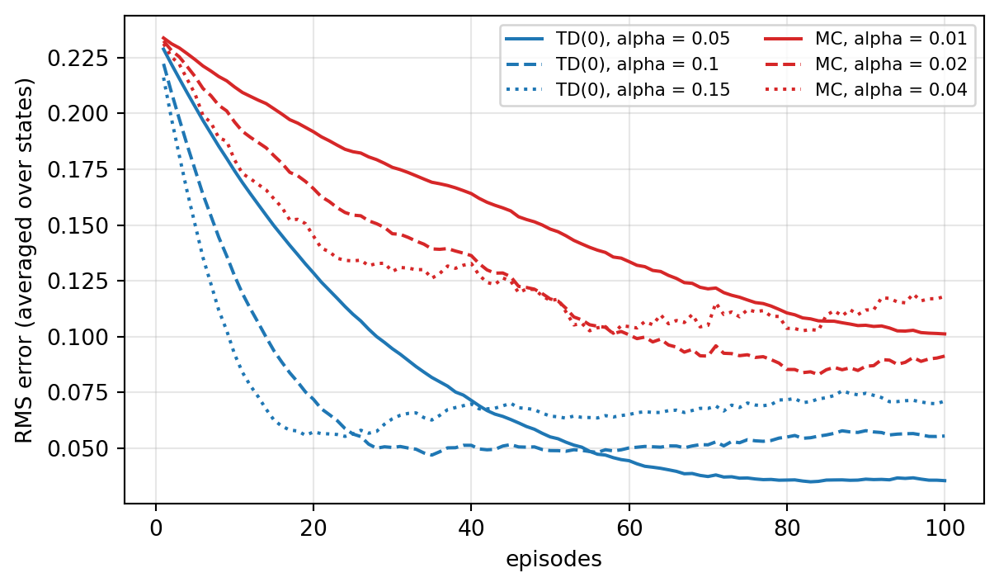
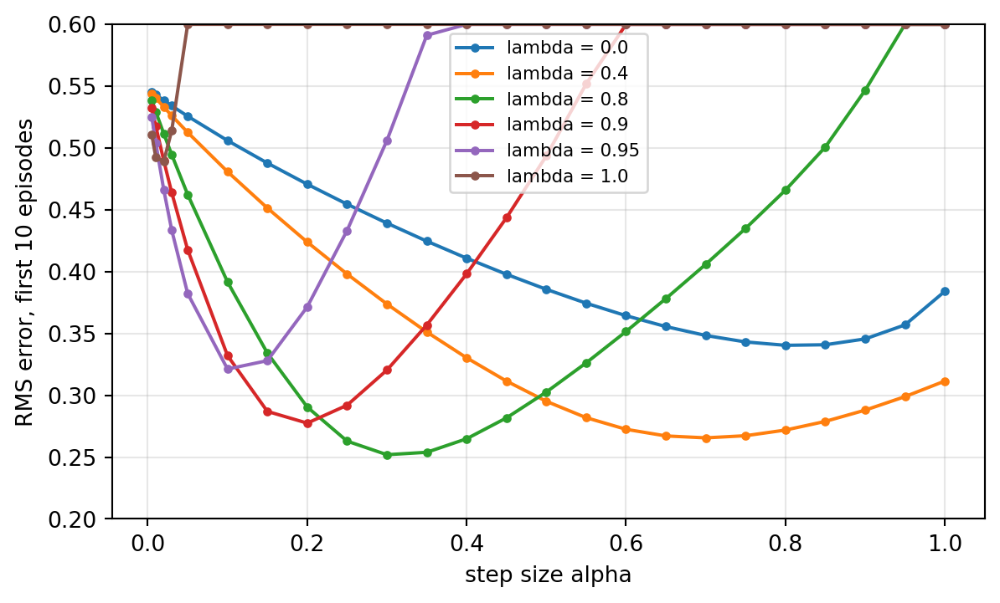
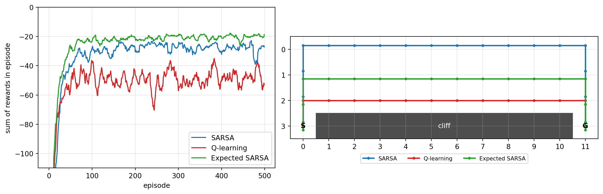
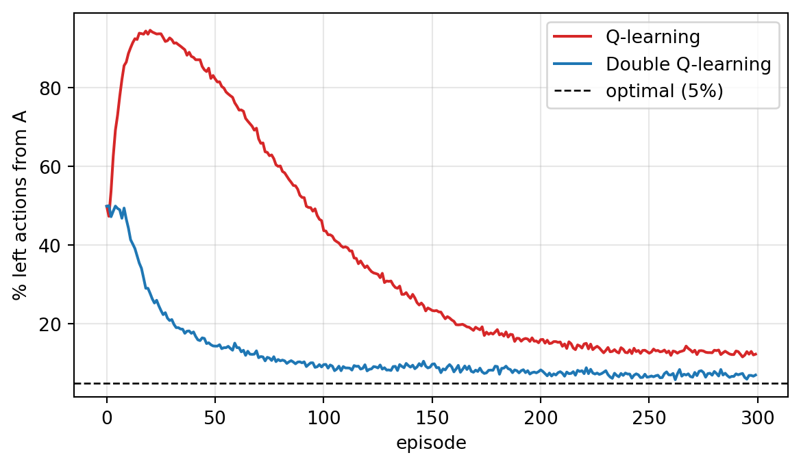
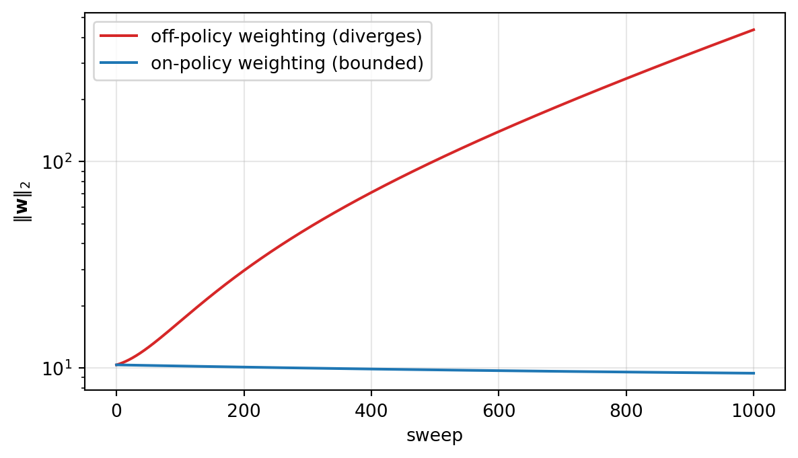
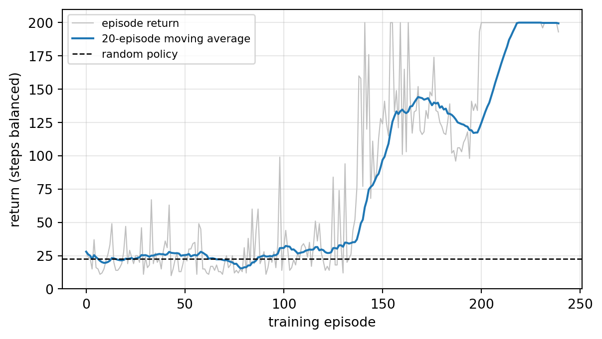

Dynamic programming (Chapter 255) solves a Markov decision process exactly, but only if someone hands you the transition probabilities \(p(s' \mid s, a)\) and the reward function \(r(s, a)\). In most applications nobody can. A pricing system does not know how each customer will respond to each price. A robot does not have an equation for the friction in its joints. What these systems do have is the ability to act and watch what happens. This chapter is about learning optimal behavior from that stream of experience alone.
Two ideas carry the whole chapter. The first is Monte Carlo estimation: run the policy to the end of an episode, record the return, and average. The second is temporal-difference (TD) learning: do not wait for the end, but update each estimate toward the reward just received plus the current estimate of the next state’s value. TD learning combines sampling, as in Monte Carlo, with bootstrapping, as in dynamic programming, and it is arguably the most distinctive idea in reinforcement learning (Sutton 1988). Its control version, Q-learning, learns the optimal action-value function directly from off-policy experience, and with a neural network, a replay buffer, and a target network it becomes the DQN agent that learned to play Atari games from pixels. Policy-gradient and actor-critic methods (Chapter 257) build on the same value-learning machinery, and offline reinforcement learning (Chapter 258) is largely the study of what goes wrong when Q-learning is fed a fixed dataset.
256.1 Prediction and Control From Experience
Reinforcement learning problems come in two flavors. Prediction (or policy evaluation) estimates \(v_\pi\) or \(q_\pi\) for a fixed policy \(\pi\). Control finds a good policy. Following the generalized policy iteration pattern of Chapter 255, every control method in this chapter interleaves a prediction step with a policy-improvement step. What changes from dynamic programming is that expectations over \(p(s' \mid s, a)\) are replaced by samples, so every value is an estimate with noise, and the agent has to keep trying actions it currently believes are worse in order to find out whether they really are. That exploration problem is the one studied in isolation in the bandit chapters (Chapter 253). Here we mostly use the simplest answer, the \(\varepsilon\)-greedy policy, which takes the greedy action with probability \(1 - \varepsilon\) and a uniformly random action otherwise.
Every method below has the form of a stochastic approximation update, \[
V(S_t) \leftarrow V(S_t) + \alpha \big[\, \text{target} - V(S_t) \,\big],
\] with step size \(\alpha\). The methods differ only in what they use as the target.
256.2 Monte Carlo Methods
256.2.1 Monte Carlo prediction
The value \(v_\pi(s)\) is an expected return, so the most direct estimator is a sample average of observed returns. Run an episode under \(\pi\), compute the return \(G_t\) that followed each visit to \(s\), and average. First-visit Monte Carlo uses only the first visit to \(s\) in each episode, which gives independent, unbiased samples. Every-visit Monte Carlo uses all visits, which is biased for finite samples but consistent. With a constant step size, the incremental form is \[
V(S_t) \leftarrow V(S_t) + \alpha \big[\, G_t - V(S_t) \,\big].
\]
Monte Carlo has two attractive properties. It needs no model, and it does not bootstrap, so its target \(G_t\) is an unbiased sample of \(v_\pi(S_t)\) regardless of how wrong the current estimates of other states are. Its weaknesses mirror those strengths. It can only update after an episode ends, so it does not apply to continuing tasks without artificial truncation. And the return is a sum of many random rewards, so its variance can be very large.
256.2.2 Monte Carlo control
To improve a policy without a model we need action values, because choosing \(\arg\max_a q(s, a)\) requires no knowledge of \(p\). Monte Carlo control estimates \(Q(s, a)\) from returns, makes the policy \(\varepsilon\)-greedy with respect to \(Q\), and repeats. An \(\varepsilon\)-greedy policy is the best policy among \(\varepsilon\)-soft policies (those that give every action probability at least \(\varepsilon/|\mathcal{A}|\)), so this loop converges to the best \(\varepsilon\)-soft policy rather than to \(\pi_*\). Driving \(\varepsilon\) to zero slowly enough, while still visiting every state-action pair infinitely often, gives the “greedy in the limit with infinite exploration” (GLIE) conditions under which the learned policy approaches the optimum.
256.2.3 Off-policy Monte Carlo and importance sampling
Often we want to learn about one policy (the target policy \(\pi\), usually greedy) from data generated by another (the behavior policy \(b\), exploratory or simply whatever a production system logged). Returns from \(b\) are reweighted by the importance-sampling ratio \[
\rho_{t:T-1} = \prod_{k=t}^{T-1} \frac{\pi(A_k \mid S_k)}{b(A_k \mid S_k)} ,
\] which corrects the probability of the observed action sequence. This is the same idea as the inverse-propensity estimators of off-policy evaluation in Chapter 254, but the product over a whole trajectory makes the variance grow exponentially with the horizon. Weighted (self-normalized) importance sampling trades a little bias for far less variance and is the practical default.
256.3 Temporal-Difference Learning
256.3.1 TD(0)
TD learning replaces the full return with a one-step bootstrapped target: the reward just observed plus the discounted current estimate of the next state, \[
V(S_t) \leftarrow V(S_t) + \alpha \big[\, R_{t+1} + \gamma V(S_{t+1}) - V(S_t) \,\big].
\] The bracketed quantity is the TD error, \[
\delta_t = R_{t+1} + \gamma V(S_{t+1}) - V(S_t).
\] It measures the disagreement between the current estimate and a slightly better informed one, made one step later. TD(0) is a sampled, incremental version of the Bellman expectation equation. Instead of averaging over all next states as dynamic programming does, it uses the one next state that actually occurred.
The comparison with Monte Carlo is a bias-variance tradeoff. The TD target depends on one random reward and one random transition, so its variance is much lower than the Monte Carlo return. But it uses the current estimate \(V(S_{t+1})\), which is wrong early in learning, so the target is biased. In practice TD usually learns faster, and it can learn online, step by step, in continuing tasks. For a fixed policy and a tabular representation, TD(0) converges to \(v_\pi\) with probability one under the usual decreasing step-size conditions \(\sum_t \alpha_t = \infty\) and \(\sum_t \alpha_t^2 < \infty\) (Sutton 1988).
There is a deeper difference too. With a finite batch of data, Monte Carlo finds the values that minimize squared error on the observed returns, while batch TD(0) finds the values of the maximum-likelihood Markov model of the data, the certainty-equivalence estimate. When the process really is Markov, the TD answer generalizes better to states whose observed returns are few and noisy.
We compare the two on the classic five-state random walk from Sutton and Barto (2018). States A through E sit in a line. The agent starts in the middle and moves left or right with equal probability. Exiting on the right pays \(+1\), exiting on the left pays \(0\), so the true values are \(1/6, 2/6, \dots, 5/6\). Both methods start from \(V = 0.5\) and see exactly the same episodes.
Code
import osimport randomimport timeimport numpy as npimport pandas as pdimport matplotlib.pyplot as pltimport torchimport torch.nn as nnrng = np.random.default_rng(632)N_STATES =5TRUE_V = np.arange(1, N_STATES +1) / (N_STATES +1)def random_walk_episode(rng, n=N_STATES):"""States 1..n, terminals 0 and n+1. Returns visited states and final reward.""" s, states = n //2+1, []while0< s < n +1: states.append(s) s +=1if rng.random() <0.5else-1return states, float(s == n +1)N_RUNS, N_EPS =100, 100episodes = [[random_walk_episode(rng) for _ inrange(N_EPS)] for _ inrange(N_RUNS)]def rms(V):return np.sqrt(np.mean((V[1:-1] - TRUE_V) **2))def td0(eps, alpha): V = np.full(N_STATES +2, 0.5); V[0] = V[-1] =0.0 err = []for states, z in eps:for k, s inenumerate(states): target = V[states[k +1]] if k +1<len(states) else z # gamma = 1 V[s] += alpha * (target - V[s]) err.append(rms(V))return errdef mc(eps, alpha): V = np.full(N_STATES +2, 0.5) err = []for states, z in eps:for s in states: # return from every visit equals z V[s] += alpha * (z - V[s]) err.append(rms(V))return errfig, ax = plt.subplots(figsize=(7, 4))for name, fn, alphas, color in [("TD(0)", td0, [0.05, 0.1, 0.15], "C0"), ("MC", mc, [0.01, 0.02, 0.04], "C3")]:for a, ls inzip(alphas, ["-", "--", ":"]): curve = np.mean([fn(episodes[r], a) for r inrange(N_RUNS)], axis=0) ax.plot(np.arange(1, N_EPS +1), curve, color=color, ls=ls, label=f"{name}, alpha = {a}")ax.set_xlabel("episodes"); ax.set_ylabel("RMS error (averaged over states)")ax.legend(fontsize=8, ncol=2); ax.grid(alpha=0.3)plt.show()

Figure 256.1: Root-mean-squared error of the value estimates on the five-state random walk, averaged over 100 independent runs, for TD(0) and constant-step Monte Carlo at several step sizes. Both methods see identical episodes. TD(0) learns faster at every step size shown.
At every step size shown, TD(0) drives the error down faster than Monte Carlo. Larger step sizes learn faster at first and then plateau at a higher noise floor, because a constant \(\alpha\) keeps chasing the most recent samples. That floor is the price of tracking a nonstationary target, and it is why practical agents decay their step size or use averaging.
256.4 Between One Step and the Whole Episode
256.4.1 n-step TD
TD(0) looks one step ahead and Monte Carlo looks to the end. The \(n\)-step return interpolates, \[
G_{t:t+n} = R_{t+1} + \gamma R_{t+2} + \cdots + \gamma^{n-1} R_{t+n} + \gamma^n V(S_{t+n}),
\] and \(n\)-step TD updates \(V(S_t)\) toward \(G_{t:t+n}\). Larger \(n\) means less bias from bootstrapping and more variance from sampled rewards. Intermediate values of \(n\) usually beat both extremes, and multi-step targets are one of the components that matter most in modern deep Q-learning agents.
256.4.2 TD(\(\lambda\)) and eligibility traces
Rather than choose one \(n\), the \(\lambda\)-return averages all of them with geometrically decaying weights, \[
G_t^\lambda = (1 - \lambda) \sum_{n=1}^{\infty} \lambda^{n-1} G_{t:t+n}, \qquad \lambda \in [0, 1].
\] With \(\lambda = 0\) it is the TD(0) target, and with \(\lambda = 1\) it is the Monte Carlo return. This forward view is conceptually clean but requires waiting for future rewards. The backward view implements the same idea incrementally with an eligibility trace\(e_t(s)\) for each state, a short-term memory of how recently and how often the state was visited: \[
e_t(s) = \gamma \lambda\, e_{t-1}(s) + \mathbb{1}[S_t = s], \qquad
V(s) \leftarrow V(s) + \alpha\, \delta_t\, e_t(s) \quad \text{for all } s.
\] Each TD error is broadcast backward to every recently visited state, in proportion to its trace. For offline updating the backward and forward views are equivalent. For online updating they are approximately so, and the “true online” variants make the equivalence exact. A common alternative is the replacing trace, which resets \(e(s)\) to one on a visit instead of incrementing it and is more stable when states are revisited often (Singh and Sutton 1996).
We run online TD(\(\lambda\)) with accumulating traces on a 19-state random walk (exits pay \(-1\) and \(+1\)), measuring the error over the first ten episodes as a function of the step size for several values of \(\lambda\). The step sizes are vectorized so one pass over the data updates all of them.
Code
N19 =19TRUE19 = np.arange(1, N19 +1) /10-1.0lambdas = [0.0, 0.4, 0.8, 0.9, 0.95, 1.0]alphas19 = np.r_[0.005, 0.01, 0.02, 0.03, np.linspace(0.05, 1.0, 20)]def walk19(rng): s, path =10, []while0< s < N19 +1: path.append(s) s +=1if rng.random() <0.5else-1return path, (1.0if s == N19 +1else-1.0)runs19 = [[walk19(rng) for _ inrange(10)] for _ inrange(30)]def td_lambda(run, lam, alphas):"""Online TD(lambda), one row of V per step size. The trace does not depend on alpha.""" V = np.zeros((len(alphas), N19 +2)) err = np.zeros(len(alphas))for path, z in run: e = np.zeros(N19 +2)for k, s inenumerate(path): v_next = V[:, path[k +1]] if k +1<len(path) else z delta = v_next - V[:, s] e *= lam e[s] +=1.0# accumulating trace V += alphas[:, None] * delta[:, None] * e[None, :] err += np.sqrt(np.mean((V[:, 1:-1] - TRUE19) **2, axis=1))return err /len(run)fig, ax = plt.subplots(figsize=(7, 4))best = []with np.errstate(over="ignore", invalid="ignore"):for lam in lambdas: curve = np.mean([td_lambda(run, lam, alphas19) for run in runs19], axis=0) curve = np.where(np.isfinite(curve), curve, np.inf) ax.plot(alphas19, np.minimum(curve, 0.6), marker=".", label=f"lambda = {lam}") best.append({"lambda": lam, "best alpha": alphas19[np.argmin(curve)],"best RMS error": curve.min()})ax.set_ylim(0.2, 0.6); ax.set_xlabel("step size alpha")ax.set_ylabel("RMS error, first 10 episodes"); ax.legend(fontsize=8); ax.grid(alpha=0.3)plt.show()print(pd.DataFrame(best).to_string(index=False, float_format=lambda x: f"{x:.3f}"))

Figure 256.2: Online TD(lambda) with accumulating eligibility traces on the 19-state random walk. Each curve shows the RMS error averaged over the first 10 episodes and 30 runs as a function of the step size. Intermediate lambda gives the lowest error, and large lambda becomes unstable at large step sizes.
The table shows the familiar U shape across \(\lambda\). Pure TD(0) propagates information one state per visit, so it is slow on a long chain. Pure Monte Carlo (\(\lambda = 1\)) has high variance and, with accumulating traces, diverges at large step sizes because a state revisited many times in one episode receives a huge trace. An intermediate \(\lambda\) gets most of the benefit of long-range credit assignment while keeping the variance in check. The same bias-variance dial appears as \(\lambda\) in generalized advantage estimation for actor-critic methods (Chapter 257).
256.5 TD Control: SARSA, Q-Learning, and Expected SARSA
For control we learn action values and act \(\varepsilon\)-greedily with respect to them. Three one-step methods differ only in how they value the next state.
SARSA uses the action the agent actually takes next, \(A_{t+1}\), which gives the method its name from the quintuple \((S_t, A_t, R_{t+1}, S_{t+1}, A_{t+1})\): \[
Q(S_t, A_t) \leftarrow Q(S_t, A_t) + \alpha \big[ R_{t+1} + \gamma Q(S_{t+1}, A_{t+1}) - Q(S_t, A_t) \big].
\] It is on-policy. It learns the value of the \(\varepsilon\)-greedy policy it is following, exploration included. Under GLIE exploration and standard step-size conditions it converges to \(q_*\) (Singh et al. 2000).
Q-learning (Watkins and Dayan 1992) uses the greedy value of the next state regardless of what the agent does next: \[
Q(S_t, A_t) \leftarrow Q(S_t, A_t) + \alpha \big[ R_{t+1} + \gamma \max_{a} Q(S_{t+1}, a) - Q(S_t, A_t) \big].
\] It is off-policy. The target is a sample of the Bellman optimality operator, so Q-learning learns \(q_*\) directly while behaving however it likes, as long as every state-action pair keeps being visited and the step sizes decay appropriately. That decoupling is what lets Q-learning learn from replayed or logged data, and it is also the source of its instabilities.
Expected SARSA (van Seijen et al. 2009) replaces the sampled next action with its expectation under the current policy, \[
Q(S_t, A_t) \leftarrow Q(S_t, A_t) + \alpha \Big[ R_{t+1} + \gamma \sum_a \pi(a \mid S_{t+1})\, Q(S_{t+1}, a) - Q(S_t, A_t) \Big].
\] This removes the variance due to the random choice of \(A_{t+1}\), which allows larger step sizes. When \(\pi\) is greedy, Expected SARSA is exactly Q-learning, so it generalizes both.
256.5.1 Cliff walking: the cost of exploration
The cliff-walking task from Sutton and Barto (2018) makes the on-policy versus off-policy distinction visible. The agent crosses a \(4 \times 12\) grid from the bottom-left corner to the bottom-right. Every step costs \(-1\). The cells between start and goal along the bottom edge are a cliff. Stepping into one costs \(-100\) and sends the agent back to the start. All three agents explore with \(\varepsilon = 0.1\) and use step size \(\alpha = 0.5\).
Code
CR, CC =4, 12START_C, GOAL_C =3* CC +0, 3* CC +11MOVES = [(-1, 0), (0, 1), (1, 0), (0, -1)]def build_cliff():"""Deterministic next-state and reward tables for every (state, action).""" nxt = np.zeros((CR * CC, 4), dtype=int) rew = np.full((CR * CC, 4), -1.0)for s inrange(CR * CC): r0, c0 =divmod(s, CC)for a, (dr, dc) inenumerate(MOVES): r, c =min(max(r0 + dr, 0), CR -1), min(max(c0 + dc, 0), CC -1)if r ==3and0< c <11: nxt[s, a], rew[s, a] = START_C, -100.0# fell off: back to startelse: nxt[s, a] = r * CC + creturn nxt.tolist(), rew.tolist()NXT, REW = build_cliff()def run_cliff(method, n_eps=500, alpha=0.5, eps=0.1, seed=0): rnd = random.Random(seed) # pure Python for speed Q = [[0.0] *4for _ inrange(CR * CC)]def act(s):if rnd.random() < eps:return rnd.randrange(4) q = Q[s]; m =max(q) best = [i for i inrange(4) if q[i] == m]return best[0] iflen(best) ==1else rnd.choice(best) returns = np.zeros(n_eps)for ep inrange(n_eps): s, G = START_C, 0.0 a = act(s)whileTrue: s2, r = NXT[s][a], REW[s][a] G += r done = s2 == GOAL_C a2 = act(s2) q2 = Q[s2]if done: target = relif method =="SARSA": target = r + q2[a2]elif method =="Q-learning": target = r +max(q2)else: # Expected SARSA m =max(q2); nb =sum(v == m for v in q2) target = r +sum((eps /4+ ((1- eps) / nb if v == m else0.0)) * vfor v in q2) Q[s][a] += alpha * (target - Q[s][a])if done:break s, a = s2, a2 returns[ep] = Greturn returns, np.array(Q)methods = ["SARSA", "Q-learning", "Expected SARSA"]cliff = {m: [run_cliff(m, seed=k) for k inrange(20)] for m in methods}def greedy_path(Q, max_len=60): s, path = START_C, [START_C]while s != GOAL_C andlen(path) < max_len: s = NXT[s][int(np.argmax(Q[s]))] path.append(s)return pathfig, axes = plt.subplots(1, 2, figsize=(12, 3.8), constrained_layout=True, gridspec_kw={"width_ratios": [1, 1.3]})colors = {"SARSA": "C0", "Q-learning": "C3", "Expected SARSA": "C2"}rows = []for m in methods: R = np.mean([r for r, _ in cliff[m]], axis=0) smooth = pd.Series(R).rolling(10, min_periods=1).mean() axes[0].plot(smooth, color=colors[m], label=m) rows.append({"method": m, "mean reward, last 100 episodes": R[-100:].mean(),"greedy path length": len(greedy_path(cliff[m][0][1])) -1})axes[0].set_ylim(-110, 0); axes[0].set_xlabel("episode")axes[0].set_ylabel("sum of rewards in episode"); axes[0].legend(); axes[0].grid(alpha=0.3)ax = axes[1]ax.add_patch(plt.Rectangle((0.5, 2.5), 10, 1, color="0.3"))ax.text(5.5, 3, "cliff", color="white", ha="center", va="center")for m, off inzip(methods, [-0.15, 0.0, 0.15]): path = greedy_path(cliff[m][0][1]) rr, cc = np.array([divmod(s, CC) for s in path]).T ax.plot(cc, rr + off, color=colors[m], lw=2, marker="o", ms=3, label=m)ax.text(0, 3, "S", ha="center", va="center", weight="bold")ax.text(11, 3, "G", ha="center", va="center", weight="bold")ax.set_xlim(-0.5, CC -0.5); ax.set_ylim(CR -0.5, -0.5); ax.set_aspect("equal")ax.set_xticks(range(CC)); ax.set_yticks(range(CR)); ax.grid(alpha=0.3)ax.legend(fontsize=8, loc="upper center", bbox_to_anchor=(0.5, -0.12), ncol=3)plt.show()print(pd.DataFrame(rows).to_string(index=False, float_format=lambda x: f"{x:.1f}"))

Figure 256.3: Cliff walking with epsilon = 0.1. Left, reward per episode (averaged over 20 runs and smoothed). Right, the greedy path each method has learned after 500 episodes. Q-learning learns the optimal path along the cliff edge but earns less while exploring, because random actions occasionally push it over. SARSA learns the safer path one row up. Expected SARSA does best online.
method mean reward, last 100 episodes greedy path length
SARSA -28.3 17
Q-learning -48.1 13
Expected SARSA -20.0 15
The two panels tell a story that is easy to misread. Q-learning learns the optimal greedy policy, the short path right along the cliff edge. Yet while it is learning, it collects less reward per episode than SARSA, because it keeps exploring with \(\varepsilon = 0.1\) next to the cliff and occasionally steps off. SARSA learns the value of the policy it actually follows, exploration included, so it discovers that walking next to the cliff is dangerous for an agent that sometimes acts randomly and picks a path farther away. Expected SARSA gets SARSA’s caution with less variance and earns the most online reward.
Which behavior you want depends on deployment. If exploration stops after training and the greedy policy is deployed, Q-learning’s answer is the right one. If the agent must keep exploring in production, or if its actions are executed imperfectly, the on-policy answer is safer. Off-policy learning optimizes a policy that is not the one generating the data, and that gap is the root of much of what follows.
256.6 Maximization Bias and Double Q-Learning
Q-learning’s target takes a maximum over noisy estimates, and the maximum of noisy estimates is biased upward. If all actions have true value zero but each estimate carries zero-mean noise, \(\max_a \hat{Q}(s, a)\) is positive in expectation. The bias feeds back through bootstrapping, inflating the values of states that lead to many uncertain actions.
Double Q-learning (van Hasselt 2010) decouples action selection from action evaluation. It keeps two independent estimates \(Q^A\) and \(Q^B\). On each step it flips a coin and, say for \(Q^A\), updates \[
Q^A(S_t, A_t) \leftarrow Q^A(S_t, A_t) + \alpha \Big[ R_{t+1} + \gamma\, Q^B\big(S_{t+1}, \arg\max_a Q^A(S_{t+1}, a)\big) - Q^A(S_t, A_t) \Big].
\] Because \(Q^B\)’s noise is independent of the choice made by \(Q^A\), the evaluation is unbiased for the selected action. (The double estimator can underestimate, which is usually the safer error.) The behavior policy acts on \(Q^A + Q^B\).
The textbook demonstration (Sutton and Barto 2018) has two non-terminal states. From state A, “right” ends the episode with reward zero and “left” moves to state B with reward zero. From B there are ten actions, each ending the episode with a reward drawn from \(\mathcal{N}(-0.1, 1)\). Going left is a mistake in expectation, so an \(\varepsilon\)-greedy agent with \(\varepsilon = 0.1\) should choose left only \(\varepsilon/2 = 5\%\) of the time. We run both algorithms, vectorized over 2,000 independent runs.
Code
def max_bias(double, n_runs=2000, n_eps=300, alpha=0.1, eps=0.1, n_b=10, seed=1): rng = np.random.default_rng(seed) n_tab =2if double else1 QA = np.zeros((n_tab, n_runs, 2)) # actions at A: 0 = left (to B), 1 = right (end) QB = np.zeros((n_tab, n_runs, n_b)) idx = np.arange(n_runs) left = np.zeros(n_eps)def choose(q): # eps-greedy with random tie-breaking greedy = np.argmax(q +1e-9* rng.random(q.shape), axis=1) explore = rng.random(len(q)) < epsreturn np.where(explore, rng.integers(q.shape[1], size=len(q)), greedy)for ep inrange(n_eps): a = choose(QA.sum(0)) left[ep] = np.mean(a ==0) b = choose(QB.sum(0)) rB = rng.normal(-0.1, 1.0, n_runs)ifnot double: L = a ==0 QA[0, L, 0] += alpha * (QB[0, L].max(axis=1) - QA[0, L, 0]) QA[0, ~L, 1] += alpha * (0.0- QA[0, ~L, 1]) QB[0, L, b[L]] += alpha * (rB[L] - QB[0, L, b[L]])else: first = rng.random(n_runs) <0.5# which table this step updatesfor i, j, m in [(0, 1, first), (1, 0, ~first)]: a_star = np.argmax(QB[i] +1e-9* rng.random(QB[i].shape), axis=1) target_A = QB[j, idx, a_star] # select with table i, evaluate with table j L, Rt = m & (a ==0), m & (a ==1) QA[i, L, 0] += alpha * (target_A[L] - QA[i, L, 0]) QA[i, Rt, 1] += alpha * (0.0- QA[i, Rt, 1]) QB[i, L, b[L]] += alpha * (rB[L] - QB[i, L, b[L]])return leftleft_q, left_dq = max_bias(False), max_bias(True)fig, ax = plt.subplots(figsize=(7, 3.8))ax.plot(100* left_q, color="C3", label="Q-learning")ax.plot(100* left_dq, color="C0", label="Double Q-learning")ax.axhline(5, color="k", ls="--", lw=1, label="optimal (5%)")ax.set_xlabel("episode"); ax.set_ylabel("% left actions from A")ax.legend(); ax.grid(alpha=0.3)plt.show()print(f"% left averaged over the first 100 episodes, Q-learning: "f"{100* left_q[:100].mean():.1f} Double Q: {100* left_dq[:100].mean():.1f}")

Figure 256.4: Percentage of episodes in which the agent chooses the left action from state A, averaged over 2,000 runs. Q-learning is drawn toward the noisy branch by maximization bias. Double Q-learning stays close to the 5% optimum for an epsilon-greedy agent (dashed).
% left averaged over the first 100 episodes, Q-learning: 75.1 Double Q: 20.2
Early in training, the maximum over ten noisy estimates in state B looks attractive, so Q-learning walks into B far more often than it should and needs many episodes to unlearn it. Double Q-learning never gets that excited. The effect looks small in a toy, but in deep Q-learning with thousands of actions and approximation error on top of sampling noise, overestimation compounds through bootstrapping and was shown to hurt Atari performance substantially, which is why Double DQN is now a default.
256.7 Function Approximation and the Deadly Triad
Tables do not scale. A state described by a few continuous sensor readings or by an image has no finite enumeration. We replace the table with a parameterized function \(\hat{v}_{\mathbf{w}}(s)\) or \(\hat{q}_{\mathbf{w}}(s, a)\) with parameter vector \(\mathbf{w}\), a linear model over features or a neural network, and update the parameters by semi-gradient TD: \[
\mathbf{w} \leftarrow \mathbf{w} + \alpha \big[ R_{t+1} + \gamma \hat{v}_{\mathbf{w}}(S_{t+1}) - \hat{v}_{\mathbf{w}}(S_t) \big] \nabla_{\mathbf{w}} \hat{v}_{\mathbf{w}}(S_t).
\] It is “semi” because the target also depends on \(\mathbf{w}\) but we do not differentiate through it. That shortcut is what makes TD fast, and it also means the update is not the gradient of any objective, so ordinary convergence guarantees for gradient descent do not apply.
For on-policy prediction with linear features the news is good. Tsitsiklis and Van Roy (1997) proved that linear TD(\(\lambda\)) converges with probability one, to a fixed point whose error is within a factor \((1 - \gamma\lambda)/(1 - \gamma)\) of the best linear approximation. Things break when three ingredients are combined, which Sutton and Barto (2018) call the deadly triad:
Function approximation, which generalizes across states so that an update to one state moves the values of others.
Bootstrapping, which uses current estimates in the target.
Off-policy training, which updates on a state distribution different from the one the target policy would generate.
Any two are safe. All three together can diverge. The canonical example is the star counterexample of Baird (1995). There are seven states, each represented by a linear feature vector with eight components, and every reward is zero, so the true value function is identically zero and is exactly representable. The target policy always moves to state 7. The behavior policy moves to state 7 only one time in seven. We run expected semi-gradient TD, a deterministic sweep with no sampling noise at all, under two state weightings: the behavior policy’s uniform distribution (off-policy) and the target policy’s own distribution (on-policy).
Code
X = np.zeros((7, 8))for i inrange(6): X[i, i], X[i, 7] =2.0, 1.0# states 1-6: v = 2 w_i + w_8X[6, 6], X[6, 7] =1.0, 2.0# state 7: v = w_7 + 2 w_8def baird(state_weights, sweeps=1000, alpha=0.01, gamma=0.99): w = np.array([1, 1, 1, 1, 1, 1, 10, 1], dtype=float) norms = [np.linalg.norm(w)]for _ inrange(sweeps): v = X @ w delta = gamma * v[6] - v # reward 0, target policy always goes to state 7 w = w + alpha * (state_weights * delta) @ X norms.append(np.linalg.norm(w))return np.array(norms), wnorm_off, w_off = baird(np.full(7, 1/7)) # behavior distributionnorm_on, w_on = baird(np.eye(7)[6]) # target-policy distributionfig, ax = plt.subplots(figsize=(7, 3.8))ax.semilogy(norm_off, color="C3", label="off-policy weighting (diverges)")ax.semilogy(norm_on, color="C0", label="on-policy weighting (bounded)")ax.set_xlabel("sweep"); ax.set_ylabel(r"$\|\mathbf{w}\|_2$"); ax.legend(); ax.grid(alpha=0.3)plt.show()print(f"final ||w||, off-policy: {norm_off[-1]:.1f} on-policy: {norm_on[-1]:.1f}")

Figure 256.5: Baird’s counterexample. Norm of the weight vector under expected semi-gradient TD with linear features, gamma = 0.99, step size 0.01. With the off-policy (uniform) state weighting the weights diverge even though the true values (all zero) are exactly representable. With the on-policy weighting the same algorithm and features stay bounded.
final ||w||, off-policy: 436.9 on-policy: 9.4
The divergence is not caused by noise, too large a step size in the usual sense, or an unrepresentable target. It is structural. Under the off-policy weighting, updates to the six outer states increase the shared weight \(w_8\), which raises the value of state 7, which raises every target, and the process feeds on itself. The same algorithm on the on-policy distribution is stable. Gradient-TD and emphatic-TD methods were developed to restore convergence guarantees in this setting. Deep Q-learning lives squarely inside the triad (neural network, bootstrapped targets, replayed off-policy data), so its engineering is largely about keeping this instability at bay.
256.8 Deep Q-Networks
The Deep Q-Network (DQN) of Mnih et al. (2015) learned to play 49 Atari 2600 games from raw pixels and the score, with one architecture and one set of hyperparameters, reaching a level comparable to a professional human tester on many of them. Its Q-function is a convolutional network \(Q_\theta(s, \cdot)\) that outputs one value per action. Two ingredients made the training stable enough to work.
Experience replay (Lin 1992). Transitions \((s, a, r, s', d)\) are stored in a large buffer, and each update uses a minibatch sampled uniformly from it. This breaks the strong temporal correlation between consecutive transitions, which otherwise violates the near-i.i.d. assumption behind stochastic gradient descent, and it reuses each transition many times, which improves data efficiency.
Target network. The bootstrap target is computed with a lagged copy of the parameters \(\theta^-\) that is synchronized with \(\theta\) only every few thousand steps. This keeps the regression target from moving with every update, which damps the feedback loop of the deadly triad.
The loss on a minibatch \(\mathcal{B}\) is \[
\mathcal{L}(\theta) = \frac{1}{|\mathcal{B}|}\sum_{(s, a, r, s', d) \in \mathcal{B}} \ell_\kappa\!\Big( r + \gamma (1 - d) \max_{a'} Q_{\theta^-}(s', a') - Q_\theta(s, a) \Big),
\] where \(d\) marks terminal transitions and \(\ell_\kappa\) is the Huber loss (quadratic near zero, linear in the tails), which limits the influence of large TD errors.
256.8.1 The main improvements
DQN set off a series of targeted fixes, each addressing one weakness.
Double DQN (van Hasselt, Guez, and Silver 2016) applies the double-estimator idea with no extra network: the online network selects the next action and the target network evaluates it, so the target becomes \(r + \gamma Q_{\theta^-}\big(s', \arg\max_{a'} Q_\theta(s', a')\big)\). It reduced overestimation and improved Atari scores substantially.
Dueling networks (Wang et al. 2016) split the head into a state-value stream \(V(s)\) and an advantage stream \(A(s, a)\), recombined as \(Q(s, a) = V(s) + A(s, a) - \frac{1}{|\mathcal{A}|}\sum_{a'} A(s, a')\). Many states have values that barely depend on the action, and the dueling architecture lets the network learn those values without having to learn every action separately.
Prioritized experience replay (Schaul et al. 2016) samples transitions with probability proportional to a power of their TD error, so surprising transitions are replayed more often, with importance-sampling weights to correct the bias this introduces.
Distributional RL (Bellemare, Dabney, and Munos 2017) learns the full distribution of the return rather than its mean. The C51 agent represents it as a categorical distribution over 51 fixed atoms and trains it with a projected distributional Bellman update and a cross-entropy loss.
Noisy networks (Fortunato et al. 2018) replace \(\varepsilon\)-greedy with learned parametric noise in the network weights, giving state-dependent exploration.
Multi-step targets use the \(n\)-step return in place of the one-step target, as discussed above.
Rainbow (Hessel et al. 2018) combined all six (double, dueling, prioritized replay, distributional, noisy nets, and \(n\)-step returns) and showed that they are largely complementary. Its ablations found prioritized replay and multi-step returns to be the most important components.
256.8.2 A tiny DQN on cart-pole
To see the whole loop run, we implement the cart-pole balancing task of Barto, Sutton, and Anderson (1983) from its equations of motion (so no simulator library is needed), and train a small Double DQN with experience replay, a target network, and the Huber loss. A pole is hinged to a cart on a track. The agent pushes the cart left or right with a fixed force, earns \(+1\) per step while the pole stays within 12 degrees of vertical and the cart stays on the track, and the episode is cut off at 200 steps. Two details matter. First, the cut-off at 200 steps is a time limit, not a failure, so the target still bootstraps there and only real failures set \(d = 1\). Second, the network is deliberately small and trains on one minibatch every four environment steps, so the whole cell runs on a CPU in well under a minute.
Code
torch.manual_seed(632)torch.set_num_threads(min(4, os.cpu_count() or1))class CartPole:"""Cart-pole dynamics of Barto, Sutton and Anderson (1983), Euler step of 0.02 s.""" g, m_cart, m_pole, half_len, force, dt =9.8, 1.0, 0.1, 0.5, 10.0, 0.02 x_lim, theta_lim, max_steps =2.4, 12* np.pi /180, 200def__init__(self, seed):self.rng = np.random.default_rng(seed)def reset(self):self.s, self.t =self.rng.uniform(-0.05, 0.05, 4), 0returnself.s.astype(np.float32)def step(self, a): x, x_dot, th, th_dot =self.s f =self.force if a ==1else-self.force cos, sin, m_tot = np.cos(th), np.sin(th), self.m_cart +self.m_pole tmp = (f +self.m_pole *self.half_len * th_dot**2* sin) / m_tot th_acc = (self.g * sin - cos * tmp) / (self.half_len * (4/3-self.m_pole * cos**2/ m_tot)) x_acc = tmp -self.m_pole *self.half_len * th_acc * cos / m_totself.s =self.s +self.dt * np.array([x_dot, x_acc, th_dot, th_acc])self.t +=1 failed =abs(self.s[0]) >self.x_lim orabs(self.s[2]) >self.theta_limreturnself.s.astype(np.float32), 1.0, failed, self.t >=self.max_stepsdef random_policy_return(n=50, seed=7): env, r = CartPole(seed), np.random.default_rng(seed) out = []for _ inrange(n): env.reset(); total =0.0whileTrue: _, rew, fail, trunc = env.step(int(r.integers(2))) total += rewif fail or trunc:break out.append(total)return np.mean(out)def make_qnet():return nn.Sequential(nn.Linear(4, 128), nn.ReLU(), nn.Linear(128, 2))STEPS, BATCH, GAMMA_DQN, LR =20_000, 128, 0.99, 2e-3TRAIN_EVERY, SYNC_EVERY, WARMUP, BUF =4, 500, 1_000, 50_000q_net, q_target = make_qnet(), make_qnet()q_target.load_state_dict(q_net.state_dict())opt = torch.optim.Adam(q_net.parameters(), lr=LR)buf_s = np.zeros((BUF, 4), np.float32); buf_s2 = np.zeros((BUF, 4), np.float32)buf_a = np.zeros(BUF, np.int64); buf_r = np.zeros(BUF, np.float32)buf_d = np.zeros(BUF, np.float32)env, act_rng = CartPole(seed=1), np.random.default_rng(2)s, ep_return, returns, n_stored = env.reset(), 0.0, [], 0t_start = time.perf_counter()for t inrange(STEPS): eps =max(0.02, 1.0- t / (0.25* STEPS))if act_rng.random() < eps: a =int(act_rng.integers(2))else:with torch.no_grad(): a =int(q_net(torch.from_numpy(s)).argmax()) s2, r, failed, truncated = env.step(a) i = n_stored % BUF buf_s[i], buf_a[i], buf_r[i], buf_s2[i], buf_d[i] = s, a, r, s2, float(failed) n_stored +=1 ep_return += r s = s2if failed or truncated: returns.append(ep_return) s, ep_return = env.reset(), 0.0if n_stored >= WARMUP and t % TRAIN_EVERY ==0: j = act_rng.integers(0, min(n_stored, BUF), BATCH) S, A = torch.from_numpy(buf_s[j]), torch.from_numpy(buf_a[j]) Rw, S2, D = (torch.from_numpy(buf_r[j]), torch.from_numpy(buf_s2[j]), torch.from_numpy(buf_d[j]))with torch.no_grad(): # Double DQN target a_next = q_net(S2).argmax(dim=1, keepdim=True) y = Rw + GAMMA_DQN * (1- D) * q_target(S2).gather(1, a_next).squeeze(1) q_sa = q_net(S).gather(1, A[:, None]).squeeze(1) loss = nn.functional.smooth_l1_loss(q_sa, y) # Huber loss opt.zero_grad(); loss.backward(); opt.step()if t % SYNC_EVERY ==0: q_target.load_state_dict(q_net.state_dict())train_seconds = time.perf_counter() - t_startdef greedy_eval(n=20, seed=99): env_eval, out = CartPole(seed), []for _ inrange(n): s_e, total = env_eval.reset(), 0.0whileTrue:with torch.no_grad(): a_e =int(q_net(torch.from_numpy(s_e)).argmax()) s_e, rew, fail, trunc = env_eval.step(a_e) total += rewif fail or trunc:break out.append(total)return np.array(out)baseline = random_policy_return()greedy = greedy_eval()returns = np.array(returns)fig, ax = plt.subplots(figsize=(7, 3.8))ax.plot(returns, color="0.75", lw=0.8, label="episode return")ax.plot(pd.Series(returns).rolling(20, min_periods=1).mean(), color="C0", label="20-episode moving average")ax.axhline(baseline, color="k", ls="--", lw=1, label="random policy")ax.set_xlabel("training episode"); ax.set_ylabel("return (steps balanced)")ax.set_ylim(0, 210); ax.legend(fontsize=8); ax.grid(alpha=0.3)plt.show()print(f"training time: {train_seconds:.1f} s for {STEPS} steps, {len(returns)} episodes")print(f"random policy mean return: {baseline:.1f}")print(f"greedy policy over {len(greedy)} test episodes: mean {greedy.mean():.1f}, "f"min {greedy.min():.0f}, max {greedy.max():.0f} (cap 200)")

Figure 256.6: A small Double DQN learning to balance the cart-pole from scratch. Return per training episode (gray) with its 20-episode moving average (blue). The dashed line is the average return of a uniformly random policy. Exploration epsilon decays linearly over the first quarter of training.
training time: 12.6 s for 20000 steps, 240 episodes
random policy mean return: 22.7
greedy policy over 20 test episodes: mean 197.3, min 190, max 200 (cap 200)
The agent starts at the level of the random baseline and, once \(\varepsilon\) has decayed and the replay buffer holds a useful variety of states, its returns climb well above it. The greedy evaluation, which uses no exploration and different initial conditions, should be compared with the random-policy mean printed above. The gap shows that the learned Q-function encodes a real balancing strategy rather than a lucky streak during training. The run also shows DQN’s characteristic texture. Learning is noisy from episode to episode, and it is not monotone, because the replay buffer, the target network, and the policy all shift together. More steps, a larger network, and the Rainbow components make the learning curve smoother and more reliable across seeds. Changing SYNC_EVERY, LR, or the seed changes the curve noticeably, and that sensitivity is itself the lesson. Report deep RL results over several seeds, never one.
256.9 State of the Art in Value-Based Deep RL
The Atari benchmark has been the proving ground for value-based methods since DQN, and the published frontier has moved in two directions.
Performance without regard to data. Agent57 (Badia et al. 2020) was the first agent to exceed the human baseline on all 57 Atari games. It combined a distributed, recurrent, replay-based Q-learner with intrinsic-motivation exploration and a meta-controller that adapts the exploration-exploitation tradeoff per game, at a cost of tens of billions of frames. MEME (Kapturowski et al. 2023) reached the same all-57-games milestone with roughly two hundred times less experience, mainly through better normalization of losses and priorities, a trust-region-style update, and architectural changes.
Sample efficiency. On the Atari 100k benchmark, which allows about two hours of real-time play per game, BBF (Schwarzer et al. 2023) reached human-level aggregate performance with a value-based agent. Its central finding is that larger Q-networks help, but only when paired with techniques that keep them trainable at a high replay ratio, such as periodic resets of network parameters, a schedule over the discount factor and the \(n\)-step horizon, and self-supervised auxiliary objectives.
Scaling the value network. Value-based networks have historically scaled poorly with parameter count, unlike networks in supervised learning. Recent work finds the training objective is part of the reason. Training the value function as classification, with cross-entropy against a histogram target, instead of as regression with mean-squared error, improves performance and scaling across Atari, robotics, chess, and language tasks (Farebrother et al. 2024). Replacing dense layers with soft mixture-of-experts modules lets value-based agents benefit from more parameters (Obando-Ceron et al. 2024). In the other direction, PQN (Gallici et al. 2025) shows that with layer normalization and many parallel environments, online Q-learning can drop both the replay buffer and the target network and still be competitive, with much faster wall-clock training.
The broad picture as of the published literature at the time of writing is that value-based deep RL is competitive with policy-gradient methods on discrete-action benchmarks, that its remaining problems are mostly about optimization (plasticity loss, overestimation, unstable targets) rather than about the Bellman equation itself, and that offline and large-scale settings (Chapter 258) are where much of the current effort has moved.
256.10 Pitfalls and When to Use
Choose on-policy or off-policy on purpose. SARSA and Expected SARSA learn the value of the policy they follow and are safer when exploration continues during deployment. Q-learning learns the greedy optimum and can use replayed or logged data, at the price of maximization bias and potential instability. If you have a fixed log of past decisions and no ability to explore, you are in the offline setting, where naive Q-learning tends to overestimate actions the data never tried (Chapter 258).
Step sizes and exploration schedules matter more than the algorithm. As the random-walk and cliff experiments show, the same method can look good or bad depending on \(\alpha\) and \(\varepsilon\). Sweep them, and compare methods at their best settings.
Watch for overestimation. Plot the predicted Q-values against realized discounted returns from evaluation episodes. Q-values that drift far above realized returns indicate maximization bias or divergence. Double Q-learning and Double DQN are cheap, standard fixes.
Respect the deadly triad. Function approximation, bootstrapping, and off-policy data together can diverge with no warning. Target networks, smaller step sizes, layer normalization, multi-step returns, and keeping the replay data close to the current policy all reduce the risk. A loss that falls while returns collapse is a classic symptom.
Time limits are not terminal states. If an episode is cut off by a time limit, the next state still has value, and treating the cut-off as terminal teaches the agent that the world ends at step 200. Store a separate flag for true termination, as the cart-pole code does.
Report variability. Deep RL results vary widely across random seeds. Report the mean and spread over several seeds, and evaluate the greedy policy separately from the noisy training returns.
When to use value-based methods. Tabular TD and Q-learning are the right tool for small, discrete problems with no model, and they make excellent baselines. DQN and its descendants suit discrete action spaces with rich observations, especially when experience is expensive and must be reused through replay. For continuous actions, or when a stochastic policy is needed, use the policy-gradient and actor-critic methods of Chapter 257, which still rely on the TD machinery of this chapter to train their critics.
256.11 References
Sutton, R. S. and Barto, A. G. Reinforcement Learning: An Introduction, 2nd ed. MIT Press, 2018. http://incompleteideas.net/book/the-book-2nd.html
Sutton, R. S. “Learning to Predict by the Methods of Temporal Differences.” Machine Learning 3, 1988, pp. 9-44. https://doi.org/10.1007/BF00115009
Watkins, C. J. C. H. and Dayan, P. “Q-learning.” Machine Learning 8, 1992, pp. 279-292. https://doi.org/10.1007/BF00992698
Singh, S., Jaakkola, T., Littman, M. L., and Szepesvári, C. “Convergence Results for Single-Step On-Policy Reinforcement-Learning Algorithms.” Machine Learning 38, 2000, pp. 287-308. https://doi.org/10.1023/A:1007678930559
Singh, S. P. and Sutton, R. S. “Reinforcement Learning with Replacing Eligibility Traces.” Machine Learning 22, 1996, pp. 123-158. https://doi.org/10.1007/BF00114726
van Seijen, H., van Hasselt, H., Whiteson, S., and Wiering, M. “A Theoretical and Empirical Analysis of Expected Sarsa.” IEEE Symposium on Adaptive Dynamic Programming and Reinforcement Learning (ADPRL), 2009, pp. 177-184. https://doi.org/10.1109/ADPRL.2009.4927542
van Hasselt, H. “Double Q-learning.” Advances in Neural Information Processing Systems 23, 2010, pp. 2613-2621. https://papers.nips.cc/paper/3964-double-q-learning
Tsitsiklis, J. N. and Van Roy, B. “An Analysis of Temporal-Difference Learning with Function Approximation.” IEEE Transactions on Automatic Control 42(5), 1997, pp. 674-690. https://doi.org/10.1109/9.580874
Baird, L. “Residual Algorithms: Reinforcement Learning with Function Approximation.” Proceedings of the 12th International Conference on Machine Learning (ICML), 1995, pp. 30-37. https://doi.org/10.1016/B978-1-55860-377-6.50013-X
Lin, L.-J. “Self-Improving Reactive Agents Based on Reinforcement Learning, Planning and Teaching.” Machine Learning 8, 1992, pp. 293-321. https://doi.org/10.1007/BF00992699
Mnih, V. et al. “Human-Level Control through Deep Reinforcement Learning.” Nature 518, 2015, pp. 529-533. https://doi.org/10.1038/nature14236
van Hasselt, H., Guez, A., and Silver, D. “Deep Reinforcement Learning with Double Q-Learning.” Proceedings of the AAAI Conference on Artificial Intelligence 30(1), 2016, pp. 2094-2100. https://doi.org/10.1609/aaai.v30i1.10295
Wang, Z., Schaul, T., Hessel, M., van Hasselt, H., Lanctot, M., and de Freitas, N. “Dueling Network Architectures for Deep Reinforcement Learning.” Proceedings of the 33rd International Conference on Machine Learning (ICML), PMLR 48, 2016, pp. 1995-2003. https://proceedings.mlr.press/v48/wangf16.html
Schaul, T., Quan, J., Antonoglou, I., and Silver, D. “Prioritized Experience Replay.” International Conference on Learning Representations (ICLR), 2016.
Bellemare, M. G., Dabney, W., and Munos, R. “A Distributional Perspective on Reinforcement Learning.” Proceedings of the 34th International Conference on Machine Learning (ICML), PMLR 70, 2017, pp. 449-458. https://proceedings.mlr.press/v70/bellemare17a.html
Fortunato, M. et al. “Noisy Networks for Exploration.” International Conference on Learning Representations (ICLR), 2018.
Hessel, M. et al. “Rainbow: Combining Improvements in Deep Reinforcement Learning.” Proceedings of the AAAI Conference on Artificial Intelligence 32(1), 2018, pp. 3215-3222. https://doi.org/10.1609/aaai.v32i1.11796
Barto, A. G., Sutton, R. S., and Anderson, C. W. “Neuronlike Adaptive Elements That Can Solve Difficult Learning Control Problems.” IEEE Transactions on Systems, Man, and Cybernetics SMC-13(5), 1983, pp. 834-846. https://doi.org/10.1109/TSMC.1983.6313077
Badia, A. P., Piot, B., Kapturowski, S., Sprechmann, P., Vitvitskyi, A., Guo, D., and Blundell, C. “Agent57: Outperforming the Atari Human Benchmark.” Proceedings of the 37th International Conference on Machine Learning (ICML), PMLR 119, 2020, pp. 507-517. https://proceedings.mlr.press/v119/badia20a.html
Kapturowski, S., Campos, V., Jiang, R., Rakićević, N., van Hasselt, H., Blundell, C., and Badia, A. P. “Human-Level Atari 200x Faster.” International Conference on Learning Representations (ICLR), 2023.
Schwarzer, M., Obando-Ceron, J., Courville, A., Bellemare, M. G., Agarwal, R., and Castro, P. S. “Bigger, Better, Faster: Human-Level Atari with Human-Level Efficiency.” Proceedings of the 40th International Conference on Machine Learning (ICML), PMLR 202, 2023, pp. 30365-30380. https://proceedings.mlr.press/v202/schwarzer23a.html
Farebrother, J. et al. “Stop Regressing: Training Value Functions via Classification for Scalable Deep RL.” Proceedings of the 41st International Conference on Machine Learning (ICML), PMLR 235, 2024, pp. 13049-13071. https://proceedings.mlr.press/v235/farebrother24a.html
Obando-Ceron, J., Sokar, G., Willi, T., Lyle, C., Farebrother, J., Foerster, J., Dziugaite, G. K., Precup, D., and Castro, P. S. “Mixtures of Experts Unlock Parameter Scaling for Deep RL.” Proceedings of the 41st International Conference on Machine Learning (ICML), PMLR 235, 2024, pp. 38520-38540.
Gallici, M., Fellows, M., Ellis, B., Pou, B., Masmitja, I., Foerster, J., and Martin, M. “Simplifying Deep Temporal Difference Learning.” International Conference on Learning Representations (ICLR), 2025. https://proceedings.iclr.cc/paper_files/paper/2025/hash/c23f3852601f6dd7f0b39223d031806f-Abstract-Conference.html
How to cite this chapter
Nguyen, M. (2026). Monte Carlo, Temporal-Difference Learning, and Q-Learning. In AI in Action: A Reference for Artificial Intelligence. https://mikenguyen13.github.io/ai_in_action/632-temporal-difference-learning.html
BibTeX
@incollection{nguyen2026aiinaction-632temporaldifferencelearning,
author = {Nguyen, Mike},
title = {{Monte Carlo, Temporal-Difference Learning, and Q-Learning}},
booktitle = {{AI in Action: A Reference for Artificial Intelligence}},
year = {2026},
url = {https://mikenguyen13.github.io/ai_in_action/632-temporal-difference-learning.html},
note = {Online book}
}
Source Code
# Monte Carlo, Temporal-Difference Learning, and Q-Learning {#sec-td-q-learning}Dynamic programming (@sec-markov-decision-processes) solves a Markov decision process exactly, but only if someone hands you the transition probabilities $p(s' \mid s, a)$ and the reward function $r(s, a)$. In most applications nobody can. A pricing system does not know how each customer will respond to each price. A robot does not have an equation for the friction in its joints. What these systems do have is the ability to act and watch what happens. This chapter is about learning optimal behavior from that stream of experience alone.Two ideas carry the whole chapter. The first is **Monte Carlo** estimation: run the policy to the end of an episode, record the return, and average. The second is **temporal-difference (TD) learning**: do not wait for the end, but update each estimate toward the reward just received plus the current estimate of the next state's value. TD learning combines sampling, as in Monte Carlo, with bootstrapping, as in dynamic programming, and it is arguably the most distinctive idea in reinforcement learning (Sutton 1988). Its control version, **Q-learning**, learns the optimal action-value function directly from off-policy experience, and with a neural network, a replay buffer, and a target network it becomes the DQN agent that learned to play Atari games from pixels. Policy-gradient and actor-critic methods (@sec-policy-gradient-actor-critic) build on the same value-learning machinery, and offline reinforcement learning (@sec-offline-model-based-rl) is largely the study of what goes wrong when Q-learning is fed a fixed dataset.## Prediction and Control From ExperienceReinforcement learning problems come in two flavors. **Prediction** (or policy evaluation) estimates $v_\pi$ or $q_\pi$ for a fixed policy $\pi$. **Control** finds a good policy. Following the generalized policy iteration pattern of @sec-markov-decision-processes, every control method in this chapter interleaves a prediction step with a policy-improvement step. What changes from dynamic programming is that expectations over $p(s' \mid s, a)$ are replaced by samples, so every value is an estimate with noise, and the agent has to keep trying actions it currently believes are worse in order to find out whether they really are. That exploration problem is the one studied in isolation in the bandit chapters (@sec-multi-armed-bandits). Here we mostly use the simplest answer, the $\varepsilon$-greedy policy, which takes the greedy action with probability $1 - \varepsilon$ and a uniformly random action otherwise.Every method below has the form of a stochastic approximation update,$$V(S_t) \leftarrow V(S_t) + \alpha \big[\, \text{target} - V(S_t) \,\big],$$with step size $\alpha$. The methods differ only in what they use as the target.## Monte Carlo Methods### Monte Carlo predictionThe value $v_\pi(s)$ is an expected return, so the most direct estimator is a sample average of observed returns. Run an episode under $\pi$, compute the return $G_t$ that followed each visit to $s$, and average. **First-visit** Monte Carlo uses only the first visit to $s$ in each episode, which gives independent, unbiased samples. **Every-visit** Monte Carlo uses all visits, which is biased for finite samples but consistent. With a constant step size, the incremental form is$$V(S_t) \leftarrow V(S_t) + \alpha \big[\, G_t - V(S_t) \,\big].$$Monte Carlo has two attractive properties. It needs no model, and it does not bootstrap, so its target $G_t$ is an unbiased sample of $v_\pi(S_t)$ regardless of how wrong the current estimates of other states are. Its weaknesses mirror those strengths. It can only update after an episode ends, so it does not apply to continuing tasks without artificial truncation. And the return is a sum of many random rewards, so its variance can be very large.### Monte Carlo controlTo improve a policy without a model we need action values, because choosing $\arg\max_a q(s, a)$ requires no knowledge of $p$. Monte Carlo control estimates $Q(s, a)$ from returns, makes the policy $\varepsilon$-greedy with respect to $Q$, and repeats. An $\varepsilon$-greedy policy is the best policy among $\varepsilon$-soft policies (those that give every action probability at least $\varepsilon/|\mathcal{A}|$), so this loop converges to the best $\varepsilon$-soft policy rather than to $\pi_*$. Driving $\varepsilon$ to zero slowly enough, while still visiting every state-action pair infinitely often, gives the "greedy in the limit with infinite exploration" (GLIE) conditions under which the learned policy approaches the optimum.### Off-policy Monte Carlo and importance samplingOften we want to learn about one policy (the **target** policy $\pi$, usually greedy) from data generated by another (the **behavior** policy $b$, exploratory or simply whatever a production system logged). Returns from $b$ are reweighted by the importance-sampling ratio$$\rho_{t:T-1} = \prod_{k=t}^{T-1} \frac{\pi(A_k \mid S_k)}{b(A_k \mid S_k)} ,$$which corrects the probability of the observed action sequence. This is the same idea as the inverse-propensity estimators of off-policy evaluation in @sec-contextual-bandits-ope, but the product over a whole trajectory makes the variance grow exponentially with the horizon. Weighted (self-normalized) importance sampling trades a little bias for far less variance and is the practical default.## Temporal-Difference Learning### TD(0)TD learning replaces the full return with a one-step **bootstrapped** target: the reward just observed plus the discounted current estimate of the next state,$$V(S_t) \leftarrow V(S_t) + \alpha \big[\, R_{t+1} + \gamma V(S_{t+1}) - V(S_t) \,\big].$$The bracketed quantity is the **TD error**,$$\delta_t = R_{t+1} + \gamma V(S_{t+1}) - V(S_t).$$It measures the disagreement between the current estimate and a slightly better informed one, made one step later. TD(0) is a sampled, incremental version of the Bellman expectation equation. Instead of averaging over all next states as dynamic programming does, it uses the one next state that actually occurred.The comparison with Monte Carlo is a bias-variance tradeoff. The TD target depends on one random reward and one random transition, so its variance is much lower than the Monte Carlo return. But it uses the current estimate $V(S_{t+1})$, which is wrong early in learning, so the target is biased. In practice TD usually learns faster, and it can learn online, step by step, in continuing tasks. For a fixed policy and a tabular representation, TD(0) converges to $v_\pi$ with probability one under the usual decreasing step-size conditions $\sum_t \alpha_t = \infty$ and $\sum_t \alpha_t^2 < \infty$ (Sutton 1988).There is a deeper difference too. With a finite batch of data, Monte Carlo finds the values that minimize squared error on the observed returns, while batch TD(0) finds the values of the maximum-likelihood Markov model of the data, the **certainty-equivalence** estimate. When the process really is Markov, the TD answer generalizes better to states whose observed returns are few and noisy.We compare the two on the classic five-state random walk from Sutton and Barto (2018). States A through E sit in a line. The agent starts in the middle and moves left or right with equal probability. Exiting on the right pays $+1$, exiting on the left pays $0$, so the true values are $1/6, 2/6, \dots, 5/6$. Both methods start from $V = 0.5$ and see exactly the same episodes.```{python}#| label: fig-632-mc-vs-td#| fig-cap: "Root-mean-squared error of the value estimates on the five-state random walk, averaged over 100 independent runs, for TD(0) and constant-step Monte Carlo at several step sizes. Both methods see identical episodes. TD(0) learns faster at every step size shown."import osimport randomimport timeimport numpy as npimport pandas as pdimport matplotlib.pyplot as pltimport torchimport torch.nn as nnrng = np.random.default_rng(632)N_STATES =5TRUE_V = np.arange(1, N_STATES +1) / (N_STATES +1)def random_walk_episode(rng, n=N_STATES):"""States 1..n, terminals 0 and n+1. Returns visited states and final reward.""" s, states = n //2+1, []while0< s < n +1: states.append(s) s +=1if rng.random() <0.5else-1return states, float(s == n +1)N_RUNS, N_EPS =100, 100episodes = [[random_walk_episode(rng) for _ inrange(N_EPS)] for _ inrange(N_RUNS)]def rms(V):return np.sqrt(np.mean((V[1:-1] - TRUE_V) **2))def td0(eps, alpha): V = np.full(N_STATES +2, 0.5); V[0] = V[-1] =0.0 err = []for states, z in eps:for k, s inenumerate(states): target = V[states[k +1]] if k +1<len(states) else z # gamma = 1 V[s] += alpha * (target - V[s]) err.append(rms(V))return errdef mc(eps, alpha): V = np.full(N_STATES +2, 0.5) err = []for states, z in eps:for s in states: # return from every visit equals z V[s] += alpha * (z - V[s]) err.append(rms(V))return errfig, ax = plt.subplots(figsize=(7, 4))for name, fn, alphas, color in [("TD(0)", td0, [0.05, 0.1, 0.15], "C0"), ("MC", mc, [0.01, 0.02, 0.04], "C3")]:for a, ls inzip(alphas, ["-", "--", ":"]): curve = np.mean([fn(episodes[r], a) for r inrange(N_RUNS)], axis=0) ax.plot(np.arange(1, N_EPS +1), curve, color=color, ls=ls, label=f"{name}, alpha = {a}")ax.set_xlabel("episodes"); ax.set_ylabel("RMS error (averaged over states)")ax.legend(fontsize=8, ncol=2); ax.grid(alpha=0.3)plt.show()```At every step size shown, TD(0) drives the error down faster than Monte Carlo. Larger step sizes learn faster at first and then plateau at a higher noise floor, because a constant $\alpha$ keeps chasing the most recent samples. That floor is the price of tracking a nonstationary target, and it is why practical agents decay their step size or use averaging.## Between One Step and the Whole Episode### n-step TDTD(0) looks one step ahead and Monte Carlo looks to the end. The **$n$-step return** interpolates,$$G_{t:t+n} = R_{t+1} + \gamma R_{t+2} + \cdots + \gamma^{n-1} R_{t+n} + \gamma^n V(S_{t+n}),$$and $n$-step TD updates $V(S_t)$ toward $G_{t:t+n}$. Larger $n$ means less bias from bootstrapping and more variance from sampled rewards. Intermediate values of $n$ usually beat both extremes, and multi-step targets are one of the components that matter most in modern deep Q-learning agents.### TD($\lambda$) and eligibility tracesRather than choose one $n$, the **$\lambda$-return** averages all of them with geometrically decaying weights,$$G_t^\lambda = (1 - \lambda) \sum_{n=1}^{\infty} \lambda^{n-1} G_{t:t+n}, \qquad \lambda \in [0, 1].$$With $\lambda = 0$ it is the TD(0) target, and with $\lambda = 1$ it is the Monte Carlo return. This **forward view** is conceptually clean but requires waiting for future rewards. The **backward view** implements the same idea incrementally with an **eligibility trace** $e_t(s)$ for each state, a short-term memory of how recently and how often the state was visited:$$e_t(s) = \gamma \lambda\, e_{t-1}(s) + \mathbb{1}[S_t = s], \qquadV(s) \leftarrow V(s) + \alpha\, \delta_t\, e_t(s) \quad \text{for all } s.$$Each TD error is broadcast backward to every recently visited state, in proportion to its trace. For offline updating the backward and forward views are equivalent. For online updating they are approximately so, and the "true online" variants make the equivalence exact. A common alternative is the **replacing trace**, which resets $e(s)$ to one on a visit instead of incrementing it and is more stable when states are revisited often (Singh and Sutton 1996).We run online TD($\lambda$) with accumulating traces on a 19-state random walk (exits pay $-1$ and $+1$), measuring the error over the first ten episodes as a function of the step size for several values of $\lambda$. The step sizes are vectorized so one pass over the data updates all of them.```{python}#| label: fig-632-td-lambda#| fig-cap: "Online TD(lambda) with accumulating eligibility traces on the 19-state random walk. Each curve shows the RMS error averaged over the first 10 episodes and 30 runs as a function of the step size. Intermediate lambda gives the lowest error, and large lambda becomes unstable at large step sizes."N19 =19TRUE19 = np.arange(1, N19 +1) /10-1.0lambdas = [0.0, 0.4, 0.8, 0.9, 0.95, 1.0]alphas19 = np.r_[0.005, 0.01, 0.02, 0.03, np.linspace(0.05, 1.0, 20)]def walk19(rng): s, path =10, []while0< s < N19 +1: path.append(s) s +=1if rng.random() <0.5else-1return path, (1.0if s == N19 +1else-1.0)runs19 = [[walk19(rng) for _ inrange(10)] for _ inrange(30)]def td_lambda(run, lam, alphas):"""Online TD(lambda), one row of V per step size. The trace does not depend on alpha.""" V = np.zeros((len(alphas), N19 +2)) err = np.zeros(len(alphas))for path, z in run: e = np.zeros(N19 +2)for k, s inenumerate(path): v_next = V[:, path[k +1]] if k +1<len(path) else z delta = v_next - V[:, s] e *= lam e[s] +=1.0# accumulating trace V += alphas[:, None] * delta[:, None] * e[None, :] err += np.sqrt(np.mean((V[:, 1:-1] - TRUE19) **2, axis=1))return err /len(run)fig, ax = plt.subplots(figsize=(7, 4))best = []with np.errstate(over="ignore", invalid="ignore"):for lam in lambdas: curve = np.mean([td_lambda(run, lam, alphas19) for run in runs19], axis=0) curve = np.where(np.isfinite(curve), curve, np.inf) ax.plot(alphas19, np.minimum(curve, 0.6), marker=".", label=f"lambda = {lam}") best.append({"lambda": lam, "best alpha": alphas19[np.argmin(curve)],"best RMS error": curve.min()})ax.set_ylim(0.2, 0.6); ax.set_xlabel("step size alpha")ax.set_ylabel("RMS error, first 10 episodes"); ax.legend(fontsize=8); ax.grid(alpha=0.3)plt.show()print(pd.DataFrame(best).to_string(index=False, float_format=lambda x: f"{x:.3f}"))```The table shows the familiar U shape across $\lambda$. Pure TD(0) propagates information one state per visit, so it is slow on a long chain. Pure Monte Carlo ($\lambda = 1$) has high variance and, with accumulating traces, diverges at large step sizes because a state revisited many times in one episode receives a huge trace. An intermediate $\lambda$ gets most of the benefit of long-range credit assignment while keeping the variance in check. The same bias-variance dial appears as $\lambda$ in generalized advantage estimation for actor-critic methods (@sec-policy-gradient-actor-critic).## TD Control: SARSA, Q-Learning, and Expected SARSAFor control we learn action values and act $\varepsilon$-greedily with respect to them. Three one-step methods differ only in how they value the next state.**SARSA** uses the action the agent actually takes next, $A_{t+1}$, which gives the method its name from the quintuple $(S_t, A_t, R_{t+1}, S_{t+1}, A_{t+1})$:$$Q(S_t, A_t) \leftarrow Q(S_t, A_t) + \alpha \big[ R_{t+1} + \gamma Q(S_{t+1}, A_{t+1}) - Q(S_t, A_t) \big].$$It is **on-policy**. It learns the value of the $\varepsilon$-greedy policy it is following, exploration included. Under GLIE exploration and standard step-size conditions it converges to $q_*$ (Singh et al. 2000).**Q-learning** (Watkins and Dayan 1992) uses the greedy value of the next state regardless of what the agent does next:$$Q(S_t, A_t) \leftarrow Q(S_t, A_t) + \alpha \big[ R_{t+1} + \gamma \max_{a} Q(S_{t+1}, a) - Q(S_t, A_t) \big].$$It is **off-policy**. The target is a sample of the Bellman *optimality* operator, so Q-learning learns $q_*$ directly while behaving however it likes, as long as every state-action pair keeps being visited and the step sizes decay appropriately. That decoupling is what lets Q-learning learn from replayed or logged data, and it is also the source of its instabilities.**Expected SARSA** (van Seijen et al. 2009) replaces the sampled next action with its expectation under the current policy,$$Q(S_t, A_t) \leftarrow Q(S_t, A_t) + \alpha \Big[ R_{t+1} + \gamma \sum_a \pi(a \mid S_{t+1})\, Q(S_{t+1}, a) - Q(S_t, A_t) \Big].$$This removes the variance due to the random choice of $A_{t+1}$, which allows larger step sizes. When $\pi$ is greedy, Expected SARSA is exactly Q-learning, so it generalizes both.### Cliff walking: the cost of explorationThe cliff-walking task from Sutton and Barto (2018) makes the on-policy versus off-policy distinction visible. The agent crosses a $4 \times 12$ grid from the bottom-left corner to the bottom-right. Every step costs $-1$. The cells between start and goal along the bottom edge are a cliff. Stepping into one costs $-100$ and sends the agent back to the start. All three agents explore with $\varepsilon = 0.1$ and use step size $\alpha = 0.5$.```{python}#| label: fig-632-cliff-walking#| fig-cap: "Cliff walking with epsilon = 0.1. Left, reward per episode (averaged over 20 runs and smoothed). Right, the greedy path each method has learned after 500 episodes. Q-learning learns the optimal path along the cliff edge but earns less while exploring, because random actions occasionally push it over. SARSA learns the safer path one row up. Expected SARSA does best online."CR, CC =4, 12START_C, GOAL_C =3* CC +0, 3* CC +11MOVES = [(-1, 0), (0, 1), (1, 0), (0, -1)]def build_cliff():"""Deterministic next-state and reward tables for every (state, action).""" nxt = np.zeros((CR * CC, 4), dtype=int) rew = np.full((CR * CC, 4), -1.0)for s inrange(CR * CC): r0, c0 =divmod(s, CC)for a, (dr, dc) inenumerate(MOVES): r, c =min(max(r0 + dr, 0), CR -1), min(max(c0 + dc, 0), CC -1)if r ==3and0< c <11: nxt[s, a], rew[s, a] = START_C, -100.0# fell off: back to startelse: nxt[s, a] = r * CC + creturn nxt.tolist(), rew.tolist()NXT, REW = build_cliff()def run_cliff(method, n_eps=500, alpha=0.5, eps=0.1, seed=0): rnd = random.Random(seed) # pure Python for speed Q = [[0.0] *4for _ inrange(CR * CC)]def act(s):if rnd.random() < eps:return rnd.randrange(4) q = Q[s]; m =max(q) best = [i for i inrange(4) if q[i] == m]return best[0] iflen(best) ==1else rnd.choice(best) returns = np.zeros(n_eps)for ep inrange(n_eps): s, G = START_C, 0.0 a = act(s)whileTrue: s2, r = NXT[s][a], REW[s][a] G += r done = s2 == GOAL_C a2 = act(s2) q2 = Q[s2]if done: target = relif method =="SARSA": target = r + q2[a2]elif method =="Q-learning": target = r +max(q2)else: # Expected SARSA m =max(q2); nb =sum(v == m for v in q2) target = r +sum((eps /4+ ((1- eps) / nb if v == m else0.0)) * vfor v in q2) Q[s][a] += alpha * (target - Q[s][a])if done:break s, a = s2, a2 returns[ep] = Greturn returns, np.array(Q)methods = ["SARSA", "Q-learning", "Expected SARSA"]cliff = {m: [run_cliff(m, seed=k) for k inrange(20)] for m in methods}def greedy_path(Q, max_len=60): s, path = START_C, [START_C]while s != GOAL_C andlen(path) < max_len: s = NXT[s][int(np.argmax(Q[s]))] path.append(s)return pathfig, axes = plt.subplots(1, 2, figsize=(12, 3.8), constrained_layout=True, gridspec_kw={"width_ratios": [1, 1.3]})colors = {"SARSA": "C0", "Q-learning": "C3", "Expected SARSA": "C2"}rows = []for m in methods: R = np.mean([r for r, _ in cliff[m]], axis=0) smooth = pd.Series(R).rolling(10, min_periods=1).mean() axes[0].plot(smooth, color=colors[m], label=m) rows.append({"method": m, "mean reward, last 100 episodes": R[-100:].mean(),"greedy path length": len(greedy_path(cliff[m][0][1])) -1})axes[0].set_ylim(-110, 0); axes[0].set_xlabel("episode")axes[0].set_ylabel("sum of rewards in episode"); axes[0].legend(); axes[0].grid(alpha=0.3)ax = axes[1]ax.add_patch(plt.Rectangle((0.5, 2.5), 10, 1, color="0.3"))ax.text(5.5, 3, "cliff", color="white", ha="center", va="center")for m, off inzip(methods, [-0.15, 0.0, 0.15]): path = greedy_path(cliff[m][0][1]) rr, cc = np.array([divmod(s, CC) for s in path]).T ax.plot(cc, rr + off, color=colors[m], lw=2, marker="o", ms=3, label=m)ax.text(0, 3, "S", ha="center", va="center", weight="bold")ax.text(11, 3, "G", ha="center", va="center", weight="bold")ax.set_xlim(-0.5, CC -0.5); ax.set_ylim(CR -0.5, -0.5); ax.set_aspect("equal")ax.set_xticks(range(CC)); ax.set_yticks(range(CR)); ax.grid(alpha=0.3)ax.legend(fontsize=8, loc="upper center", bbox_to_anchor=(0.5, -0.12), ncol=3)plt.show()print(pd.DataFrame(rows).to_string(index=False, float_format=lambda x: f"{x:.1f}"))```The two panels tell a story that is easy to misread. Q-learning learns the optimal greedy policy, the short path right along the cliff edge. Yet while it is learning, it collects less reward per episode than SARSA, because it keeps exploring with $\varepsilon = 0.1$ next to the cliff and occasionally steps off. SARSA learns the value of the policy it actually follows, exploration included, so it discovers that walking next to the cliff is dangerous *for an agent that sometimes acts randomly* and picks a path farther away. Expected SARSA gets SARSA's caution with less variance and earns the most online reward.Which behavior you want depends on deployment. If exploration stops after training and the greedy policy is deployed, Q-learning's answer is the right one. If the agent must keep exploring in production, or if its actions are executed imperfectly, the on-policy answer is safer. Off-policy learning optimizes a policy that is not the one generating the data, and that gap is the root of much of what follows.## Maximization Bias and Double Q-LearningQ-learning's target takes a maximum over noisy estimates, and the maximum of noisy estimates is biased upward. If all actions have true value zero but each estimate carries zero-mean noise, $\max_a \hat{Q}(s, a)$ is positive in expectation. The bias feeds back through bootstrapping, inflating the values of states that lead to many uncertain actions.**Double Q-learning** (van Hasselt 2010) decouples action selection from action evaluation. It keeps two independent estimates $Q^A$ and $Q^B$. On each step it flips a coin and, say for $Q^A$, updates$$Q^A(S_t, A_t) \leftarrow Q^A(S_t, A_t) + \alpha \Big[ R_{t+1} + \gamma\, Q^B\big(S_{t+1}, \arg\max_a Q^A(S_{t+1}, a)\big) - Q^A(S_t, A_t) \Big].$$Because $Q^B$'s noise is independent of the choice made by $Q^A$, the evaluation is unbiased for the selected action. (The double estimator can underestimate, which is usually the safer error.) The behavior policy acts on $Q^A + Q^B$.The textbook demonstration (Sutton and Barto 2018) has two non-terminal states. From state A, "right" ends the episode with reward zero and "left" moves to state B with reward zero. From B there are ten actions, each ending the episode with a reward drawn from $\mathcal{N}(-0.1, 1)$. Going left is a mistake in expectation, so an $\varepsilon$-greedy agent with $\varepsilon = 0.1$ should choose left only $\varepsilon/2 = 5\%$ of the time. We run both algorithms, vectorized over 2,000 independent runs.```{python}#| label: fig-632-max-bias#| fig-cap: "Percentage of episodes in which the agent chooses the left action from state A, averaged over 2,000 runs. Q-learning is drawn toward the noisy branch by maximization bias. Double Q-learning stays close to the 5% optimum for an epsilon-greedy agent (dashed)."def max_bias(double, n_runs=2000, n_eps=300, alpha=0.1, eps=0.1, n_b=10, seed=1): rng = np.random.default_rng(seed) n_tab =2if double else1 QA = np.zeros((n_tab, n_runs, 2)) # actions at A: 0 = left (to B), 1 = right (end) QB = np.zeros((n_tab, n_runs, n_b)) idx = np.arange(n_runs) left = np.zeros(n_eps)def choose(q): # eps-greedy with random tie-breaking greedy = np.argmax(q +1e-9* rng.random(q.shape), axis=1) explore = rng.random(len(q)) < epsreturn np.where(explore, rng.integers(q.shape[1], size=len(q)), greedy)for ep inrange(n_eps): a = choose(QA.sum(0)) left[ep] = np.mean(a ==0) b = choose(QB.sum(0)) rB = rng.normal(-0.1, 1.0, n_runs)ifnot double: L = a ==0 QA[0, L, 0] += alpha * (QB[0, L].max(axis=1) - QA[0, L, 0]) QA[0, ~L, 1] += alpha * (0.0- QA[0, ~L, 1]) QB[0, L, b[L]] += alpha * (rB[L] - QB[0, L, b[L]])else: first = rng.random(n_runs) <0.5# which table this step updatesfor i, j, m in [(0, 1, first), (1, 0, ~first)]: a_star = np.argmax(QB[i] +1e-9* rng.random(QB[i].shape), axis=1) target_A = QB[j, idx, a_star] # select with table i, evaluate with table j L, Rt = m & (a ==0), m & (a ==1) QA[i, L, 0] += alpha * (target_A[L] - QA[i, L, 0]) QA[i, Rt, 1] += alpha * (0.0- QA[i, Rt, 1]) QB[i, L, b[L]] += alpha * (rB[L] - QB[i, L, b[L]])return leftleft_q, left_dq = max_bias(False), max_bias(True)fig, ax = plt.subplots(figsize=(7, 3.8))ax.plot(100* left_q, color="C3", label="Q-learning")ax.plot(100* left_dq, color="C0", label="Double Q-learning")ax.axhline(5, color="k", ls="--", lw=1, label="optimal (5%)")ax.set_xlabel("episode"); ax.set_ylabel("% left actions from A")ax.legend(); ax.grid(alpha=0.3)plt.show()print(f"% left averaged over the first 100 episodes, Q-learning: "f"{100* left_q[:100].mean():.1f} Double Q: {100* left_dq[:100].mean():.1f}")```Early in training, the maximum over ten noisy estimates in state B looks attractive, so Q-learning walks into B far more often than it should and needs many episodes to unlearn it. Double Q-learning never gets that excited. The effect looks small in a toy, but in deep Q-learning with thousands of actions and approximation error on top of sampling noise, overestimation compounds through bootstrapping and was shown to hurt Atari performance substantially, which is why Double DQN is now a default.## Function Approximation and the Deadly TriadTables do not scale. A state described by a few continuous sensor readings or by an image has no finite enumeration. We replace the table with a parameterized function $\hat{v}_{\mathbf{w}}(s)$ or $\hat{q}_{\mathbf{w}}(s, a)$ with parameter vector $\mathbf{w}$, a linear model over features or a neural network, and update the parameters by **semi-gradient** TD:$$\mathbf{w} \leftarrow \mathbf{w} + \alpha \big[ R_{t+1} + \gamma \hat{v}_{\mathbf{w}}(S_{t+1}) - \hat{v}_{\mathbf{w}}(S_t) \big] \nabla_{\mathbf{w}} \hat{v}_{\mathbf{w}}(S_t).$$It is "semi" because the target also depends on $\mathbf{w}$ but we do not differentiate through it. That shortcut is what makes TD fast, and it also means the update is not the gradient of any objective, so ordinary convergence guarantees for gradient descent do not apply.For on-policy prediction with linear features the news is good. Tsitsiklis and Van Roy (1997) proved that linear TD($\lambda$) converges with probability one, to a fixed point whose error is within a factor $(1 - \gamma\lambda)/(1 - \gamma)$ of the best linear approximation. Things break when three ingredients are combined, which Sutton and Barto (2018) call the **deadly triad**:1. **Function approximation**, which generalizes across states so that an update to one state moves the values of others.2. **Bootstrapping**, which uses current estimates in the target.3. **Off-policy training**, which updates on a state distribution different from the one the target policy would generate.Any two are safe. All three together can diverge. The canonical example is the star counterexample of Baird (1995). There are seven states, each represented by a linear feature vector with eight components, and every reward is zero, so the true value function is identically zero and is exactly representable. The target policy always moves to state 7. The behavior policy moves to state 7 only one time in seven. We run expected semi-gradient TD, a deterministic sweep with no sampling noise at all, under two state weightings: the behavior policy's uniform distribution (off-policy) and the target policy's own distribution (on-policy).```{python}#| label: fig-632-deadly-triad#| fig-cap: "Baird's counterexample. Norm of the weight vector under expected semi-gradient TD with linear features, gamma = 0.99, step size 0.01. With the off-policy (uniform) state weighting the weights diverge even though the true values (all zero) are exactly representable. With the on-policy weighting the same algorithm and features stay bounded."X = np.zeros((7, 8))for i inrange(6): X[i, i], X[i, 7] =2.0, 1.0# states 1-6: v = 2 w_i + w_8X[6, 6], X[6, 7] =1.0, 2.0# state 7: v = w_7 + 2 w_8def baird(state_weights, sweeps=1000, alpha=0.01, gamma=0.99): w = np.array([1, 1, 1, 1, 1, 1, 10, 1], dtype=float) norms = [np.linalg.norm(w)]for _ inrange(sweeps): v = X @ w delta = gamma * v[6] - v # reward 0, target policy always goes to state 7 w = w + alpha * (state_weights * delta) @ X norms.append(np.linalg.norm(w))return np.array(norms), wnorm_off, w_off = baird(np.full(7, 1/7)) # behavior distributionnorm_on, w_on = baird(np.eye(7)[6]) # target-policy distributionfig, ax = plt.subplots(figsize=(7, 3.8))ax.semilogy(norm_off, color="C3", label="off-policy weighting (diverges)")ax.semilogy(norm_on, color="C0", label="on-policy weighting (bounded)")ax.set_xlabel("sweep"); ax.set_ylabel(r"$\|\mathbf{w}\|_2$"); ax.legend(); ax.grid(alpha=0.3)plt.show()print(f"final ||w||, off-policy: {norm_off[-1]:.1f} on-policy: {norm_on[-1]:.1f}")```The divergence is not caused by noise, too large a step size in the usual sense, or an unrepresentable target. It is structural. Under the off-policy weighting, updates to the six outer states increase the shared weight $w_8$, which raises the value of state 7, which raises every target, and the process feeds on itself. The same algorithm on the on-policy distribution is stable. Gradient-TD and emphatic-TD methods were developed to restore convergence guarantees in this setting. Deep Q-learning lives squarely inside the triad (neural network, bootstrapped targets, replayed off-policy data), so its engineering is largely about keeping this instability at bay.## Deep Q-NetworksThe **Deep Q-Network (DQN)** of Mnih et al. (2015) learned to play 49 Atari 2600 games from raw pixels and the score, with one architecture and one set of hyperparameters, reaching a level comparable to a professional human tester on many of them. Its Q-function is a convolutional network $Q_\theta(s, \cdot)$ that outputs one value per action. Two ingredients made the training stable enough to work.**Experience replay** (Lin 1992). Transitions $(s, a, r, s', d)$ are stored in a large buffer, and each update uses a minibatch sampled uniformly from it. This breaks the strong temporal correlation between consecutive transitions, which otherwise violates the near-i.i.d. assumption behind stochastic gradient descent, and it reuses each transition many times, which improves data efficiency.**Target network.** The bootstrap target is computed with a lagged copy of the parameters $\theta^-$ that is synchronized with $\theta$ only every few thousand steps. This keeps the regression target from moving with every update, which damps the feedback loop of the deadly triad.The loss on a minibatch $\mathcal{B}$ is$$\mathcal{L}(\theta) = \frac{1}{|\mathcal{B}|}\sum_{(s, a, r, s', d) \in \mathcal{B}} \ell_\kappa\!\Big( r + \gamma (1 - d) \max_{a'} Q_{\theta^-}(s', a') - Q_\theta(s, a) \Big),$$where $d$ marks terminal transitions and $\ell_\kappa$ is the Huber loss (quadratic near zero, linear in the tails), which limits the influence of large TD errors.### The main improvementsDQN set off a series of targeted fixes, each addressing one weakness.- **Double DQN** (van Hasselt, Guez, and Silver 2016) applies the double-estimator idea with no extra network: the online network selects the next action and the target network evaluates it, so the target becomes $r + \gamma Q_{\theta^-}\big(s', \arg\max_{a'} Q_\theta(s', a')\big)$. It reduced overestimation and improved Atari scores substantially.- **Dueling networks** (Wang et al. 2016) split the head into a state-value stream $V(s)$ and an advantage stream $A(s, a)$, recombined as $Q(s, a) = V(s) + A(s, a) - \frac{1}{|\mathcal{A}|}\sum_{a'} A(s, a')$. Many states have values that barely depend on the action, and the dueling architecture lets the network learn those values without having to learn every action separately.- **Prioritized experience replay** (Schaul et al. 2016) samples transitions with probability proportional to a power of their TD error, so surprising transitions are replayed more often, with importance-sampling weights to correct the bias this introduces.- **Distributional RL** (Bellemare, Dabney, and Munos 2017) learns the full distribution of the return rather than its mean. The C51 agent represents it as a categorical distribution over 51 fixed atoms and trains it with a projected distributional Bellman update and a cross-entropy loss.- **Noisy networks** (Fortunato et al. 2018) replace $\varepsilon$-greedy with learned parametric noise in the network weights, giving state-dependent exploration.- **Multi-step targets** use the $n$-step return in place of the one-step target, as discussed above.- **Rainbow** (Hessel et al. 2018) combined all six (double, dueling, prioritized replay, distributional, noisy nets, and $n$-step returns) and showed that they are largely complementary. Its ablations found prioritized replay and multi-step returns to be the most important components.### A tiny DQN on cart-poleTo see the whole loop run, we implement the cart-pole balancing task of Barto, Sutton, and Anderson (1983) from its equations of motion (so no simulator library is needed), and train a small Double DQN with experience replay, a target network, and the Huber loss. A pole is hinged to a cart on a track. The agent pushes the cart left or right with a fixed force, earns $+1$ per step while the pole stays within 12 degrees of vertical and the cart stays on the track, and the episode is cut off at 200 steps. Two details matter. First, the cut-off at 200 steps is a time limit, not a failure, so the target still bootstraps there and only real failures set $d = 1$. Second, the network is deliberately small and trains on one minibatch every four environment steps, so the whole cell runs on a CPU in well under a minute.```{python}#| label: fig-632-dqn-cartpole#| fig-cap: "A small Double DQN learning to balance the cart-pole from scratch. Return per training episode (gray) with its 20-episode moving average (blue). The dashed line is the average return of a uniformly random policy. Exploration epsilon decays linearly over the first quarter of training."torch.manual_seed(632)torch.set_num_threads(min(4, os.cpu_count() or1))class CartPole:"""Cart-pole dynamics of Barto, Sutton and Anderson (1983), Euler step of 0.02 s.""" g, m_cart, m_pole, half_len, force, dt =9.8, 1.0, 0.1, 0.5, 10.0, 0.02 x_lim, theta_lim, max_steps =2.4, 12* np.pi /180, 200def__init__(self, seed):self.rng = np.random.default_rng(seed)def reset(self):self.s, self.t =self.rng.uniform(-0.05, 0.05, 4), 0returnself.s.astype(np.float32)def step(self, a): x, x_dot, th, th_dot =self.s f =self.force if a ==1else-self.force cos, sin, m_tot = np.cos(th), np.sin(th), self.m_cart +self.m_pole tmp = (f +self.m_pole *self.half_len * th_dot**2* sin) / m_tot th_acc = (self.g * sin - cos * tmp) / (self.half_len * (4/3-self.m_pole * cos**2/ m_tot)) x_acc = tmp -self.m_pole *self.half_len * th_acc * cos / m_totself.s =self.s +self.dt * np.array([x_dot, x_acc, th_dot, th_acc])self.t +=1 failed =abs(self.s[0]) >self.x_lim orabs(self.s[2]) >self.theta_limreturnself.s.astype(np.float32), 1.0, failed, self.t >=self.max_stepsdef random_policy_return(n=50, seed=7): env, r = CartPole(seed), np.random.default_rng(seed) out = []for _ inrange(n): env.reset(); total =0.0whileTrue: _, rew, fail, trunc = env.step(int(r.integers(2))) total += rewif fail or trunc:break out.append(total)return np.mean(out)def make_qnet():return nn.Sequential(nn.Linear(4, 128), nn.ReLU(), nn.Linear(128, 2))STEPS, BATCH, GAMMA_DQN, LR =20_000, 128, 0.99, 2e-3TRAIN_EVERY, SYNC_EVERY, WARMUP, BUF =4, 500, 1_000, 50_000q_net, q_target = make_qnet(), make_qnet()q_target.load_state_dict(q_net.state_dict())opt = torch.optim.Adam(q_net.parameters(), lr=LR)buf_s = np.zeros((BUF, 4), np.float32); buf_s2 = np.zeros((BUF, 4), np.float32)buf_a = np.zeros(BUF, np.int64); buf_r = np.zeros(BUF, np.float32)buf_d = np.zeros(BUF, np.float32)env, act_rng = CartPole(seed=1), np.random.default_rng(2)s, ep_return, returns, n_stored = env.reset(), 0.0, [], 0t_start = time.perf_counter()for t inrange(STEPS): eps =max(0.02, 1.0- t / (0.25* STEPS))if act_rng.random() < eps: a =int(act_rng.integers(2))else:with torch.no_grad(): a =int(q_net(torch.from_numpy(s)).argmax()) s2, r, failed, truncated = env.step(a) i = n_stored % BUF buf_s[i], buf_a[i], buf_r[i], buf_s2[i], buf_d[i] = s, a, r, s2, float(failed) n_stored +=1 ep_return += r s = s2if failed or truncated: returns.append(ep_return) s, ep_return = env.reset(), 0.0if n_stored >= WARMUP and t % TRAIN_EVERY ==0: j = act_rng.integers(0, min(n_stored, BUF), BATCH) S, A = torch.from_numpy(buf_s[j]), torch.from_numpy(buf_a[j]) Rw, S2, D = (torch.from_numpy(buf_r[j]), torch.from_numpy(buf_s2[j]), torch.from_numpy(buf_d[j]))with torch.no_grad(): # Double DQN target a_next = q_net(S2).argmax(dim=1, keepdim=True) y = Rw + GAMMA_DQN * (1- D) * q_target(S2).gather(1, a_next).squeeze(1) q_sa = q_net(S).gather(1, A[:, None]).squeeze(1) loss = nn.functional.smooth_l1_loss(q_sa, y) # Huber loss opt.zero_grad(); loss.backward(); opt.step()if t % SYNC_EVERY ==0: q_target.load_state_dict(q_net.state_dict())train_seconds = time.perf_counter() - t_startdef greedy_eval(n=20, seed=99): env_eval, out = CartPole(seed), []for _ inrange(n): s_e, total = env_eval.reset(), 0.0whileTrue:with torch.no_grad(): a_e =int(q_net(torch.from_numpy(s_e)).argmax()) s_e, rew, fail, trunc = env_eval.step(a_e) total += rewif fail or trunc:break out.append(total)return np.array(out)baseline = random_policy_return()greedy = greedy_eval()returns = np.array(returns)fig, ax = plt.subplots(figsize=(7, 3.8))ax.plot(returns, color="0.75", lw=0.8, label="episode return")ax.plot(pd.Series(returns).rolling(20, min_periods=1).mean(), color="C0", label="20-episode moving average")ax.axhline(baseline, color="k", ls="--", lw=1, label="random policy")ax.set_xlabel("training episode"); ax.set_ylabel("return (steps balanced)")ax.set_ylim(0, 210); ax.legend(fontsize=8); ax.grid(alpha=0.3)plt.show()print(f"training time: {train_seconds:.1f} s for {STEPS} steps, {len(returns)} episodes")print(f"random policy mean return: {baseline:.1f}")print(f"greedy policy over {len(greedy)} test episodes: mean {greedy.mean():.1f}, "f"min {greedy.min():.0f}, max {greedy.max():.0f} (cap 200)")```The agent starts at the level of the random baseline and, once $\varepsilon$ has decayed and the replay buffer holds a useful variety of states, its returns climb well above it. The greedy evaluation, which uses no exploration and different initial conditions, should be compared with the random-policy mean printed above. The gap shows that the learned Q-function encodes a real balancing strategy rather than a lucky streak during training. The run also shows DQN's characteristic texture. Learning is noisy from episode to episode, and it is not monotone, because the replay buffer, the target network, and the policy all shift together. More steps, a larger network, and the Rainbow components make the learning curve smoother and more reliable across seeds. Changing `SYNC_EVERY`, `LR`, or the seed changes the curve noticeably, and that sensitivity is itself the lesson. Report deep RL results over several seeds, never one.## State of the Art in Value-Based Deep RLThe Atari benchmark has been the proving ground for value-based methods since DQN, and the published frontier has moved in two directions.**Performance without regard to data.** Agent57 (Badia et al. 2020) was the first agent to exceed the human baseline on all 57 Atari games. It combined a distributed, recurrent, replay-based Q-learner with intrinsic-motivation exploration and a meta-controller that adapts the exploration-exploitation tradeoff per game, at a cost of tens of billions of frames. MEME (Kapturowski et al. 2023) reached the same all-57-games milestone with roughly two hundred times less experience, mainly through better normalization of losses and priorities, a trust-region-style update, and architectural changes.**Sample efficiency.** On the Atari 100k benchmark, which allows about two hours of real-time play per game, BBF (Schwarzer et al. 2023) reached human-level aggregate performance with a value-based agent. Its central finding is that larger Q-networks help, but only when paired with techniques that keep them trainable at a high replay ratio, such as periodic resets of network parameters, a schedule over the discount factor and the $n$-step horizon, and self-supervised auxiliary objectives.**Scaling the value network.** Value-based networks have historically scaled poorly with parameter count, unlike networks in supervised learning. Recent work finds the training objective is part of the reason. Training the value function as classification, with cross-entropy against a histogram target, instead of as regression with mean-squared error, improves performance and scaling across Atari, robotics, chess, and language tasks (Farebrother et al. 2024). Replacing dense layers with soft mixture-of-experts modules lets value-based agents benefit from more parameters (Obando-Ceron et al. 2024). In the other direction, PQN (Gallici et al. 2025) shows that with layer normalization and many parallel environments, online Q-learning can drop both the replay buffer and the target network and still be competitive, with much faster wall-clock training.The broad picture as of the published literature at the time of writing is that value-based deep RL is competitive with policy-gradient methods on discrete-action benchmarks, that its remaining problems are mostly about optimization (plasticity loss, overestimation, unstable targets) rather than about the Bellman equation itself, and that offline and large-scale settings (@sec-offline-model-based-rl) are where much of the current effort has moved.## Pitfalls and When to Use**Choose on-policy or off-policy on purpose.** SARSA and Expected SARSA learn the value of the policy they follow and are safer when exploration continues during deployment. Q-learning learns the greedy optimum and can use replayed or logged data, at the price of maximization bias and potential instability. If you have a fixed log of past decisions and no ability to explore, you are in the offline setting, where naive Q-learning tends to overestimate actions the data never tried (@sec-offline-model-based-rl).**Step sizes and exploration schedules matter more than the algorithm.** As the random-walk and cliff experiments show, the same method can look good or bad depending on $\alpha$ and $\varepsilon$. Sweep them, and compare methods at their best settings.**Watch for overestimation.** Plot the predicted Q-values against realized discounted returns from evaluation episodes. Q-values that drift far above realized returns indicate maximization bias or divergence. Double Q-learning and Double DQN are cheap, standard fixes.**Respect the deadly triad.** Function approximation, bootstrapping, and off-policy data together can diverge with no warning. Target networks, smaller step sizes, layer normalization, multi-step returns, and keeping the replay data close to the current policy all reduce the risk. A loss that falls while returns collapse is a classic symptom.**Time limits are not terminal states.** If an episode is cut off by a time limit, the next state still has value, and treating the cut-off as terminal teaches the agent that the world ends at step 200. Store a separate flag for true termination, as the cart-pole code does.**Report variability.** Deep RL results vary widely across random seeds. Report the mean and spread over several seeds, and evaluate the greedy policy separately from the noisy training returns.**When to use value-based methods.** Tabular TD and Q-learning are the right tool for small, discrete problems with no model, and they make excellent baselines. DQN and its descendants suit discrete action spaces with rich observations, especially when experience is expensive and must be reused through replay. For continuous actions, or when a stochastic policy is needed, use the policy-gradient and actor-critic methods of @sec-policy-gradient-actor-critic, which still rely on the TD machinery of this chapter to train their critics.## References1. Sutton, R. S. and Barto, A. G. *Reinforcement Learning: An Introduction*, 2nd ed. MIT Press, 2018. http://incompleteideas.net/book/the-book-2nd.html2. Sutton, R. S. "Learning to Predict by the Methods of Temporal Differences." *Machine Learning* 3, 1988, pp. 9-44. https://doi.org/10.1007/BF001150093. Watkins, C. J. C. H. and Dayan, P. "Q-learning." *Machine Learning* 8, 1992, pp. 279-292. https://doi.org/10.1007/BF009926984. Singh, S., Jaakkola, T., Littman, M. L., and Szepesvári, C. "Convergence Results for Single-Step On-Policy Reinforcement-Learning Algorithms." *Machine Learning* 38, 2000, pp. 287-308. https://doi.org/10.1023/A:10076789305595. Singh, S. P. and Sutton, R. S. "Reinforcement Learning with Replacing Eligibility Traces." *Machine Learning* 22, 1996, pp. 123-158. https://doi.org/10.1007/BF001147266. van Seijen, H., van Hasselt, H., Whiteson, S., and Wiering, M. "A Theoretical and Empirical Analysis of Expected Sarsa." *IEEE Symposium on Adaptive Dynamic Programming and Reinforcement Learning (ADPRL)*, 2009, pp. 177-184. https://doi.org/10.1109/ADPRL.2009.49275427. van Hasselt, H. "Double Q-learning." *Advances in Neural Information Processing Systems* 23, 2010, pp. 2613-2621. https://papers.nips.cc/paper/3964-double-q-learning8. Tsitsiklis, J. N. and Van Roy, B. "An Analysis of Temporal-Difference Learning with Function Approximation." *IEEE Transactions on Automatic Control* 42(5), 1997, pp. 674-690. https://doi.org/10.1109/9.5808749. Baird, L. "Residual Algorithms: Reinforcement Learning with Function Approximation." *Proceedings of the 12th International Conference on Machine Learning (ICML)*, 1995, pp. 30-37. https://doi.org/10.1016/B978-1-55860-377-6.50013-X10. Lin, L.-J. "Self-Improving Reactive Agents Based on Reinforcement Learning, Planning and Teaching." *Machine Learning* 8, 1992, pp. 293-321. https://doi.org/10.1007/BF0099269911. Mnih, V. et al. "Human-Level Control through Deep Reinforcement Learning." *Nature* 518, 2015, pp. 529-533. https://doi.org/10.1038/nature1423612. van Hasselt, H., Guez, A., and Silver, D. "Deep Reinforcement Learning with Double Q-Learning." *Proceedings of the AAAI Conference on Artificial Intelligence* 30(1), 2016, pp. 2094-2100. https://doi.org/10.1609/aaai.v30i1.1029513. Wang, Z., Schaul, T., Hessel, M., van Hasselt, H., Lanctot, M., and de Freitas, N. "Dueling Network Architectures for Deep Reinforcement Learning." *Proceedings of the 33rd International Conference on Machine Learning (ICML)*, PMLR 48, 2016, pp. 1995-2003. https://proceedings.mlr.press/v48/wangf16.html14. Schaul, T., Quan, J., Antonoglou, I., and Silver, D. "Prioritized Experience Replay." *International Conference on Learning Representations (ICLR)*, 2016.15. Bellemare, M. G., Dabney, W., and Munos, R. "A Distributional Perspective on Reinforcement Learning." *Proceedings of the 34th International Conference on Machine Learning (ICML)*, PMLR 70, 2017, pp. 449-458. https://proceedings.mlr.press/v70/bellemare17a.html16. Fortunato, M. et al. "Noisy Networks for Exploration." *International Conference on Learning Representations (ICLR)*, 2018.17. Hessel, M. et al. "Rainbow: Combining Improvements in Deep Reinforcement Learning." *Proceedings of the AAAI Conference on Artificial Intelligence* 32(1), 2018, pp. 3215-3222. https://doi.org/10.1609/aaai.v32i1.1179618. Barto, A. G., Sutton, R. S., and Anderson, C. W. "Neuronlike Adaptive Elements That Can Solve Difficult Learning Control Problems." *IEEE Transactions on Systems, Man, and Cybernetics* SMC-13(5), 1983, pp. 834-846. https://doi.org/10.1109/TSMC.1983.631307719. Badia, A. P., Piot, B., Kapturowski, S., Sprechmann, P., Vitvitskyi, A., Guo, D., and Blundell, C. "Agent57: Outperforming the Atari Human Benchmark." *Proceedings of the 37th International Conference on Machine Learning (ICML)*, PMLR 119, 2020, pp. 507-517. https://proceedings.mlr.press/v119/badia20a.html20. Kapturowski, S., Campos, V., Jiang, R., Rakićević, N., van Hasselt, H., Blundell, C., and Badia, A. P. "Human-Level Atari 200x Faster." *International Conference on Learning Representations (ICLR)*, 2023.21. Schwarzer, M., Obando-Ceron, J., Courville, A., Bellemare, M. G., Agarwal, R., and Castro, P. S. "Bigger, Better, Faster: Human-Level Atari with Human-Level Efficiency." *Proceedings of the 40th International Conference on Machine Learning (ICML)*, PMLR 202, 2023, pp. 30365-30380. https://proceedings.mlr.press/v202/schwarzer23a.html22. Farebrother, J. et al. "Stop Regressing: Training Value Functions via Classification for Scalable Deep RL." *Proceedings of the 41st International Conference on Machine Learning (ICML)*, PMLR 235, 2024, pp. 13049-13071. https://proceedings.mlr.press/v235/farebrother24a.html23. Obando-Ceron, J., Sokar, G., Willi, T., Lyle, C., Farebrother, J., Foerster, J., Dziugaite, G. K., Precup, D., and Castro, P. S. "Mixtures of Experts Unlock Parameter Scaling for Deep RL." *Proceedings of the 41st International Conference on Machine Learning (ICML)*, PMLR 235, 2024, pp. 38520-38540.24. Gallici, M., Fellows, M., Ellis, B., Pou, B., Masmitja, I., Foerster, J., and Martin, M. "Simplifying Deep Temporal Difference Learning." *International Conference on Learning Representations (ICLR)*, 2025. https://proceedings.iclr.cc/paper_files/paper/2025/hash/c23f3852601f6dd7f0b39223d031806f-Abstract-Conference.html